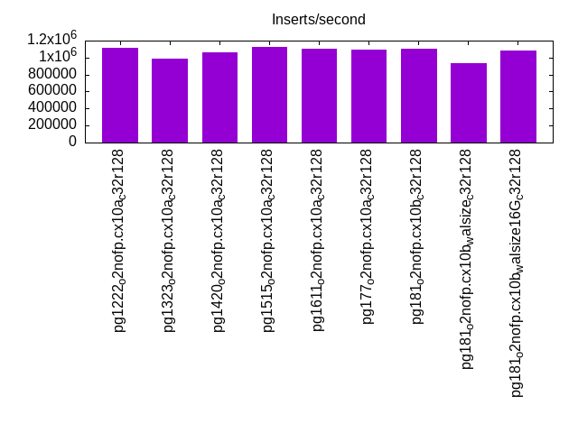
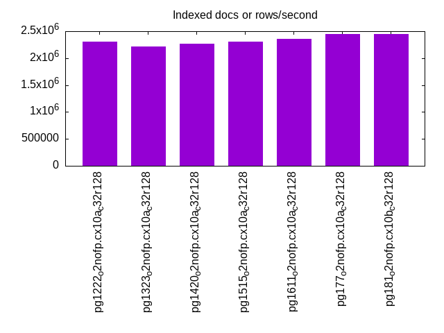
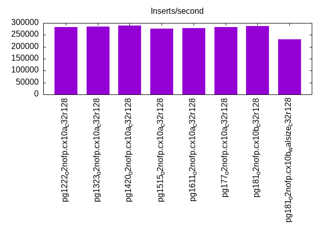
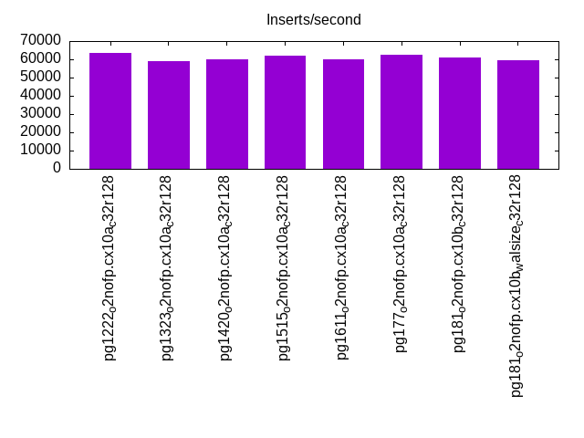
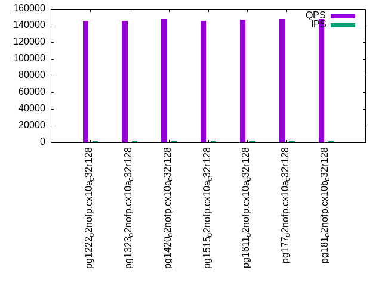
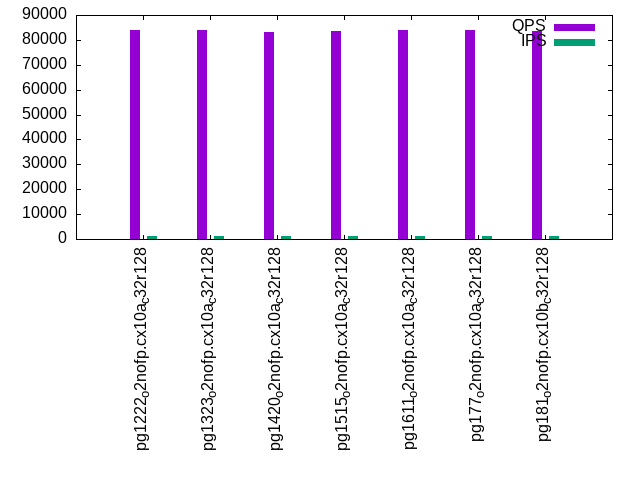
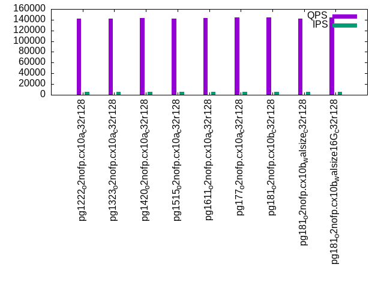
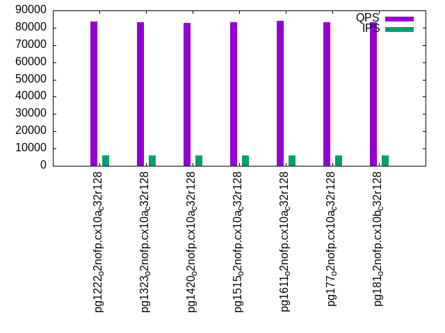
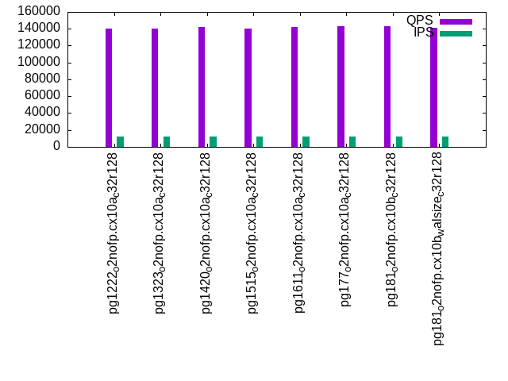
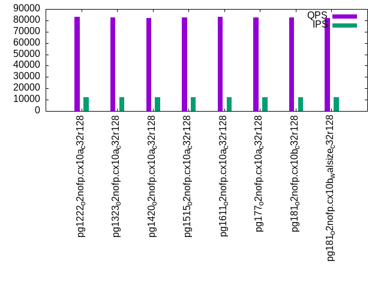

This is a report for the insert benchmark with 120M docs and 12 client(s). It is generated by scripts (bash, awk, sed) and Tufte might not be impressed. An overview of the insert benchmark is here and a short update is here. Below, by DBMS, I mean DBMS+version.config. An example is my8020.c10b40 where my means MySQL, 8020 is version 8.0.20 and c10b40 is the name for the configuration file.
The test server has 32 cores, 128G RAM and 1 NVMe devices. The benchmark was run with 8 clients and there were 1 or 3 connections per client (1 for queries or inserts without rate limits, 1+1 for rate limited inserts+deletes). It uses 8 tables with a table per client. It loads 10M rows per table without secondary indexes, creates 3 secondary indexes per table, then inserts 16m+4m rows per table with a delete per insert to avoid growing the table. It then does 6 read+write tests for 1800s each that do queries as fast as possible with 100,100,500,500,1000,1000 inserts/s and the same for deletes/s per client concurrent with the queries. The database is cached. Clients and the DBMS share one server.
The tested DBMS are:
The numbers are inserts/s for l.i0, l.i1 and l.i2, indexed docs (or rows) /s for l.x and queries/s for qr100, qp100 thru qr1000, qp1000" The values are the average rate over the entire test for inserts (IPS) and queries (QPS). The range of values for IPS and QPS is split into 3 parts: bottom 25%, middle 50%, top 25%. Values in the bottom 25% have a red background, values in the top 25% have a green background and values in the middle have no color. A gray background is used for values that can be ignored because the DBMS did not sustain the target insert rate. Red backgrounds are not used when the minimum value is within 80% of the max value.
| dbms | l.i0 | l.x | l.i1 | l.i2 | qr100 | qp100 | qr500 | qp500 | qr1000 | qp1000 |
|---|---|---|---|---|---|---|---|---|---|---|
| pg1222_o2nofp.cx10a_c32r128 | 1111111 | 2307694 | 283604 | 63660 | 145403 | 84167 | 141614 | 83672 | 140003 | 83116 |
| pg1323_o2nofp.cx10a_c32r128 | 991736 | 2222224 | 284024 | 58896 | 145900 | 83804 | 142306 | 83248 | 140701 | 82771 |
| pg1420_o2nofp.cx10a_c32r128 | 1061947 | 2264153 | 288722 | 60226 | 147709 | 83017 | 143579 | 82785 | 142100 | 82164 |
| pg1515_o2nofp.cx10a_c32r128 | 1121495 | 2307694 | 275862 | 61856 | 145769 | 83422 | 141957 | 83123 | 140543 | 82480 |
| pg1611_o2nofp.cx10a_c32r128 | 1100917 | 2352943 | 278665 | 59776 | 147343 | 83928 | 143416 | 83798 | 142041 | 83029 |
| pg177_o2nofp.cx10a_c32r128 | 1090909 | 2448982 | 282353 | 62419 | 147861 | 83776 | 144168 | 83214 | 142705 | 82601 |
| pg181_o2nofp.cx10b_c32r128 | 1100917 | 2448982 | 286140 | 60759 | 147902 | 83614 | 144498 | 83212 | 142783 | 82561 |
This table has relative throughput, throughput for the DBMS relative to the DBMS in the first line, using the absolute throughput from the previous table. Values less than 0.95 have a yellow background. Values greater than 1.05 have a blue background.
| dbms | l.i0 | l.x | l.i1 | l.i2 | qr100 | qp100 | qr500 | qp500 | qr1000 | qp1000 |
|---|---|---|---|---|---|---|---|---|---|---|
| pg1222_o2nofp.cx10a_c32r128 | 1.00 | 1.00 | 1.00 | 1.00 | 1.00 | 1.00 | 1.00 | 1.00 | 1.00 | 1.00 |
| pg1323_o2nofp.cx10a_c32r128 | 0.89 | 0.96 | 1.00 | 0.93 | 1.00 | 1.00 | 1.00 | 0.99 | 1.00 | 1.00 |
| pg1420_o2nofp.cx10a_c32r128 | 0.96 | 0.98 | 1.02 | 0.95 | 1.02 | 0.99 | 1.01 | 0.99 | 1.01 | 0.99 |
| pg1515_o2nofp.cx10a_c32r128 | 1.01 | 1.00 | 0.97 | 0.97 | 1.00 | 0.99 | 1.00 | 0.99 | 1.00 | 0.99 |
| pg1611_o2nofp.cx10a_c32r128 | 0.99 | 1.02 | 0.98 | 0.94 | 1.01 | 1.00 | 1.01 | 1.00 | 1.01 | 1.00 |
| pg177_o2nofp.cx10a_c32r128 | 0.98 | 1.06 | 1.00 | 0.98 | 1.02 | 1.00 | 1.02 | 0.99 | 1.02 | 0.99 |
| pg181_o2nofp.cx10b_c32r128 | 0.99 | 1.06 | 1.01 | 0.95 | 1.02 | 0.99 | 1.02 | 0.99 | 1.02 | 0.99 |
This lists the average rate of inserts/s for the tests that do inserts concurrent with queries. For such tests the query rate is listed in the table above. The read+write tests are setup so that the insert rate should match the target rate every second. Cells that are not at least 95% of the target have a red background to indicate a failure to satisfy the target.
| dbms | qr100.L1 | qp100.L2 | qr500.L3 | qp500.L4 | qr1000.L5 | qp1000.L6 |
|---|---|---|---|---|---|---|
| pg1222_o2nofp.cx10a_c32r128 | 1193 | 1193 | 5964 | 5960 | 11920 | 11920 |
| pg1323_o2nofp.cx10a_c32r128 | 1192 | 1192 | 5960 | 5960 | 11920 | 11927 |
| pg1420_o2nofp.cx10a_c32r128 | 1193 | 1193 | 5964 | 5964 | 11920 | 11920 |
| pg1515_o2nofp.cx10a_c32r128 | 1192 | 1192 | 5960 | 5960 | 11920 | 11927 |
| pg1611_o2nofp.cx10a_c32r128 | 1192 | 1192 | 5964 | 5964 | 11927 | 11927 |
| pg177_o2nofp.cx10a_c32r128 | 1193 | 1193 | 5964 | 5964 | 11927 | 11920 |
| pg181_o2nofp.cx10b_c32r128 | 1192 | 1192 | 5964 | 5964 | 11927 | 11927 |
| target | 1200 | 1200 | 6000 | 6000 | 12000 | 12000 |
l.i0: load without secondary indexes. Graphs for performance per 1-second interval are here.
Average throughput:
Insert response time histogram: each cell has the percentage of responses that take <= the time in the header and max is the max response time in seconds. For the max column values in the top 25% of the range have a red background and in the bottom 25% of the range have a green background. The red background is not used when the min value is within 80% of the max value.
| dbms | 256us | 1ms | 4ms | 16ms | 64ms | 256ms | 1s | 4s | 16s | gt | max |
|---|---|---|---|---|---|---|---|---|---|---|---|
| pg1222_o2nofp.cx10a_c32r128 | 99.191 | 0.807 | 0.001 | 0.006 | |||||||
| pg1323_o2nofp.cx10a_c32r128 | 99.056 | 0.880 | 0.006 | 0.012 | 0.022 | 0.022 | 0.001 | 2.080 | |||
| pg1420_o2nofp.cx10a_c32r128 | 98.457 | 1.542 | 0.001 | 0.006 | |||||||
| pg1515_o2nofp.cx10a_c32r128 | 99.075 | 0.921 | 0.004 | 0.009 | |||||||
| pg1611_o2nofp.cx10a_c32r128 | 99.062 | 0.936 | 0.002 | 0.005 | |||||||
| pg177_o2nofp.cx10a_c32r128 | 98.977 | 1.021 | 0.002 | 0.005 | |||||||
| pg181_o2nofp.cx10b_c32r128 | 98.914 | 1.082 | 0.004 | 0.005 |
Performance metrics for the DBMS listed above. Some are normalized by throughput, others are not. Legend for results is here.
ips qps rps rmbps wps wmbps rpq rkbpq wpi wkbpi csps cpups cspq cpupq dbgb1 dbgb2 rss maxop p50 p99 tag 1111111 0 0 0.0 4029.0 466.5 0.000 0.000 0.004 0.430 122298 48.1 0.110 14 11.5 31.0 5.4 0.006 114287 106988 pg1222_o2nofp.cx10a_c32r128 991736 0 1 0.0 3643.5 422.8 0.000 0.000 0.004 0.437 109430 43.5 0.110 14 11.5 31.1 3.3 2.080 114188 7799 pg1323_o2nofp.cx10a_c32r128 1061947 0 1 0.0 3855.6 444.9 0.000 0.000 0.004 0.429 119093 48.0 0.112 14 11.5 31.1 7.7 0.006 109786 105588 pg1420_o2nofp.cx10a_c32r128 1121495 0 1 0.0 4048.4 468.1 0.000 0.000 0.004 0.427 123418 48.8 0.110 14 11.5 31.1 1.5 0.009 114586 107287 pg1515_o2nofp.cx10a_c32r128 1100917 0 1 0.0 4040.8 467.3 0.000 0.000 0.004 0.435 122999 48.7 0.112 14 11.5 31.1 1.5 0.005 114186 107688 pg1611_o2nofp.cx10a_c32r128 1090909 0 1 0.0 3944.7 455.5 0.000 0.000 0.004 0.428 111362 47.1 0.102 14 11.5 31.1 0.2 0.005 113687 108587 pg177_o2nofp.cx10a_c32r128 1100917 0 2 0.0 3933.7 454.1 0.000 0.000 0.004 0.422 110935 47.3 0.101 14 11.5 31.1 0.2 0.005 112987 106487 pg181_o2nofp.cx10b_c32r128
Average values from iostat.
r/s rkB/s rrqm/s %rrqm r_await rareq-s w/s wkB/s wrqm/s %wrqm w_await wareq-s d/s dkB/s drqm/s %drqm d_await dareq-s f/s f_await aqu-sz %util 0.000 0.000 0.000 0.000 0.000 0.000 4029.0 477691 521.6 11.46 0.382 117.5 5.724 58.02 0.000 0.000 1.236 8.587 175.5 0.414 1.721 22.62 pg1222_o2nofp.cx10a_c32r128 0.592 2.367 0.000 0.000 0.199 3.167 3643.5 432907 466.1 11.15 5.560 118.1 5.600 68.19 0.000 0.000 6.125 9.808 152.4 1.065 11.00 32.82 pg1323_o2nofp.cx10a_c32r128 0.555 2.218 0.000 0.000 0.242 3.273 3855.6 455614 519.0 11.55 0.381 117.1 5.700 55.85 0.000 0.000 1.260 8.591 176.0 0.416 1.635 22.12 pg1420_o2nofp.cx10a_c32r128 1.305 5.219 0.000 0.000 0.289 3.810 4048.4 479380 516.7 11.29 0.374 117.3 1.000 15.12 0.000 0.000 0.902 13.29 182.1 0.414 1.683 22.54 pg1515_o2nofp.cx10a_c32r128 1.181 4.724 0.000 0.000 0.312 3.619 4040.8 478467 516.5 11.36 0.369 117.2 0.943 21.26 0.000 0.000 0.868 21.01 182.2 0.414 1.655 22.58 pg1611_o2nofp.cx10a_c32r128 1.300 5.199 0.000 0.000 0.316 3.636 3944.7 466427 470.1 10.29 0.360 117.3 0.690 9.633 0.000 0.000 0.830 11.72 171.4 0.409 1.568 21.79 pg177_o2nofp.cx10a_c32r128 1.663 6.654 0.000 0.000 0.248 3.636 3933.7 465046 500.8 10.99 0.357 117.3 0.590 18.38 0.000 0.000 0.806 17.49 172.6 0.410 1.543 21.75 pg181_o2nofp.cx10b_c32r128
l.x: create secondary indexes.
Average throughput:
Performance metrics for the DBMS listed above. Some are normalized by throughput, others are not. Legend for results is here.
ips qps rps rmbps wps wmbps rpq rkbpq wpi wkbpi csps cpups cspq cpupq dbgb1 dbgb2 rss maxop p50 p99 tag 2307694 0 0 0.0 5463.2 668.9 0.000 0.000 0.002 0.297 29036 23.8 0.013 3 23.1 53.1 6.8 0.049 NA NA pg1222_o2nofp.cx10a_c32r128 2222224 0 1 0.0 5043.8 618.2 0.000 0.000 0.002 0.285 23090 23.5 0.010 3 23.1 53.2 6.9 0.007 NA NA pg1323_o2nofp.cx10a_c32r128 2264153 0 1 0.0 5209.7 637.9 0.000 0.000 0.002 0.289 23042 25.3 0.010 4 23.1 53.2 6.8 0.036 NA NA pg1420_o2nofp.cx10a_c32r128 2307694 0 2 0.0 5527.3 677.6 0.000 0.000 0.002 0.301 27925 24.2 0.012 3 23.1 53.2 6.9 0.041 NA NA pg1515_o2nofp.cx10a_c32r128 2352943 0 1 0.0 5579.9 684.3 0.000 0.000 0.002 0.298 28507 23.7 0.012 3 23.1 53.2 6.9 0.003 NA NA pg1611_o2nofp.cx10a_c32r128 2448982 0 1 0.0 5542.8 679.4 0.000 0.000 0.002 0.284 16422 22.9 0.007 3 23.1 53.1 6.3 0.007 NA NA pg177_o2nofp.cx10a_c32r128 2448982 0 0 0.0 5406.2 662.4 0.000 0.000 0.002 0.277 16222 23.4 0.007 3 23.1 53.1 7.0 0.033 NA NA pg181_o2nofp.cx10b_c32r128
Average values from iostat.
r/s rkB/s rrqm/s %rrqm r_await rareq-s w/s wkB/s wrqm/s %wrqm w_await wareq-s d/s dkB/s drqm/s %drqm d_await dareq-s f/s f_await aqu-sz %util 0.000 0.000 0.000 0.000 0.000 0.000 5463.2 684974 271.5 4.379 0.764 125.0 6.360 121.9 0.000 0.000 1.431 18.64 64.44 0.462 4.545 23.24 pg1222_o2nofp.cx10a_c32r128 0.800 3.200 0.000 0.000 0.254 4.000 5043.8 633074 243.6 5.427 0.830 124.1 4.400 363.0 0.000 0.000 1.456 74.66 60.55 0.447 4.238 21.19 pg1323_o2nofp.cx10a_c32r128 0.880 3.519 0.000 0.000 0.253 3.200 5209.7 653230 270.7 4.795 0.849 125.0 4.699 88.07 0.000 0.000 1.550 16.34 62.70 0.454 4.442 22.02 pg1420_o2nofp.cx10a_c32r128 1.560 6.240 0.000 0.000 0.314 3.600 5527.3 693886 267.4 10.45 0.883 115.2 4.140 67.28 0.000 0.000 1.301 14.72 64.16 0.463 4.563 23.23 pg1515_o2nofp.cx10a_c32r128 0.620 2.480 0.000 0.000 0.530 4.000 5579.9 700730 266.0 4.440 0.813 125.3 3.440 44.48 0.000 0.000 1.378 13.06 63.96 0.465 4.677 23.11 pg1611_o2nofp.cx10a_c32r128 1.340 5.360 0.000 0.000 0.389 4.000 5542.8 695673 269.8 5.133 0.818 124.8 4.980 42314.2 0.000 0.000 1.298 4485.4 64.08 0.460 4.903 22.77 pg177_o2nofp.cx10a_c32r128 0.160 0.640 0.000 0.000 0.750 2.400 5406.2 678337 271.2 5.291 0.829 124.9 4.540 35272.4 0.000 0.000 0.963 4519.6 63.54 0.469 4.562 22.80 pg181_o2nofp.cx10b_c32r128
l.i1: continue load after secondary indexes created with 50 inserts per transaction. Graphs for performance per 1-second interval are here.
Average throughput:
Insert response time histogram: each cell has the percentage of responses that take <= the time in the header and max is the max response time in seconds. For the max column values in the top 25% of the range have a red background and in the bottom 25% of the range have a green background. The red background is not used when the min value is within 80% of the max value.
| dbms | 256us | 1ms | 4ms | 16ms | 64ms | 256ms | 1s | 4s | 16s | gt | max |
|---|---|---|---|---|---|---|---|---|---|---|---|
| pg1222_o2nofp.cx10a_c32r128 | 0.604 | 98.751 | 0.265 | 0.280 | 0.060 | 0.038 | nonzero | 1.077 | |||
| pg1323_o2nofp.cx10a_c32r128 | 0.562 | 98.796 | 0.273 | 0.281 | 0.061 | 0.028 | 0.945 | ||||
| pg1420_o2nofp.cx10a_c32r128 | 0.592 | 98.929 | 0.189 | 0.206 | 0.045 | 0.039 | nonzero | 1.039 | |||
| pg1515_o2nofp.cx10a_c32r128 | 1.374 | 98.112 | 0.188 | 0.236 | 0.051 | 0.038 | 0.728 | ||||
| pg1611_o2nofp.cx10a_c32r128 | 0.941 | 98.496 | 0.230 | 0.243 | 0.056 | 0.033 | 0.616 | ||||
| pg177_o2nofp.cx10a_c32r128 | 1.219 | 98.204 | 0.222 | 0.251 | 0.077 | 0.028 | 0.827 | ||||
| pg181_o2nofp.cx10b_c32r128 | 0.805 | 98.611 | 0.245 | 0.238 | 0.066 | 0.035 | 0.675 |
Delete response time histogram: each cell has the percentage of responses that take <= the time in the header and max is the max response time in seconds. For the max column values in the top 25% of the range have a red background and in the bottom 25% of the range have a green background. The red background is not used when the min value is within 80% of the max value.
| dbms | 256us | 1ms | 4ms | 16ms | 64ms | 256ms | 1s | 4s | 16s | gt | max |
|---|---|---|---|---|---|---|---|---|---|---|---|
| pg1222_o2nofp.cx10a_c32r128 | 29.717 | 68.922 | 0.992 | 0.268 | 0.060 | 0.040 | nonzero | 1.077 | |||
| pg1323_o2nofp.cx10a_c32r128 | 27.481 | 71.290 | 0.870 | 0.265 | 0.064 | 0.030 | 0.946 | ||||
| pg1420_o2nofp.cx10a_c32r128 | 26.032 | 73.140 | 0.552 | 0.193 | 0.043 | 0.040 | nonzero | 1.039 | |||
| pg1515_o2nofp.cx10a_c32r128 | 25.449 | 73.579 | 0.683 | 0.201 | 0.050 | 0.038 | 0.728 | ||||
| pg1611_o2nofp.cx10a_c32r128 | 26.136 | 72.748 | 0.801 | 0.224 | 0.058 | 0.034 | 0.616 | ||||
| pg177_o2nofp.cx10a_c32r128 | 22.871 | 76.226 | 0.562 | 0.239 | 0.073 | 0.030 | 0.829 | ||||
| pg181_o2nofp.cx10b_c32r128 | 23.501 | 75.672 | 0.502 | 0.226 | 0.062 | 0.035 | 0.674 |
Performance metrics for the DBMS listed above. Some are normalized by throughput, others are not. Legend for results is here.
ips qps rps rmbps wps wmbps rpq rkbpq wpi wkbpi csps cpups cspq cpupq dbgb1 dbgb2 rss maxop p50 p99 tag 283604 0 0 0.0 3843.5 420.4 0.000 0.000 0.014 1.518 125276 64.2 0.442 72 35.4 131.5 25.1 1.077 31196 2050 pg1222_o2nofp.cx10a_c32r128 284024 0 0 0.0 3812.0 416.2 0.000 0.000 0.013 1.500 123893 65.8 0.436 74 35.0 131.1 24.5 0.945 29795 2250 pg1323_o2nofp.cx10a_c32r128 288722 0 0 0.0 3817.0 411.1 0.000 0.000 0.013 1.458 126885 62.3 0.439 69 33.5 129.5 24.6 1.039 29595 700 pg1420_o2nofp.cx10a_c32r128 275862 0 0 0.0 3632.0 391.3 0.000 0.000 0.013 1.452 124852 60.2 0.453 70 33.5 129.5 27.1 0.728 31196 1800 pg1515_o2nofp.cx10a_c32r128 278665 0 0 0.0 3484.6 390.9 0.000 0.000 0.013 1.436 127684 61.4 0.458 71 33.2 129.2 28.7 0.616 27396 2850 pg1611_o2nofp.cx10a_c32r128 282353 0 1 0.0 3592.0 402.8 0.000 0.000 0.013 1.461 117515 61.1 0.416 69 33.2 129.3 29.4 0.827 28946 850 pg177_o2nofp.cx10a_c32r128 286140 0 0 0.0 3657.3 409.6 0.000 0.000 0.013 1.466 118065 61.9 0.413 69 33.0 129.1 30.1 0.675 28246 900 pg181_o2nofp.cx10b_c32r128
Average values from iostat.
r/s rkB/s rrqm/s %rrqm r_await rareq-s w/s wkB/s wrqm/s %wrqm w_await wareq-s d/s dkB/s drqm/s %drqm d_await dareq-s f/s f_await aqu-sz %util 0.006 0.024 0.000 0.000 0.207 0.119 3843.5 430506 319.3 7.016 5.360 111.3 3.970 878.2 0.000 0.000 5.896 152.3 220.7 1.495 11.24 42.60 pg1222_o2nofp.cx10a_c32r128 0.407 1.636 0.001 0.093 0.337 2.197 3812.0 426140 352.7 7.750 4.681 110.9 3.960 546.2 0.000 0.000 5.912 102.7 224.0 1.454 9.839 40.05 pg1323_o2nofp.cx10a_c32r128 0.385 1.540 0.000 0.000 1.153 2.135 3817.0 420935 307.2 6.452 4.716 109.8 3.782 451.6 0.000 0.000 6.812 69.81 250.0 1.509 9.202 40.15 pg1420_o2nofp.cx10a_c32r128 0.483 1.934 0.000 0.000 0.321 2.273 3632.0 400689 283.3 5.978 3.892 110.4 0.237 424.4 0.000 0.000 0.616 372.0 237.7 1.564 8.269 40.65 pg1515_o2nofp.cx10a_c32r128 0.335 1.339 0.000 0.000 0.167 2.087 3484.6 400266 293.4 6.465 4.584 114.3 0.232 264.4 0.000 0.000 0.231 37.23 193.7 1.522 8.283 37.44 pg1611_o2nofp.cx10a_c32r128 0.659 2.635 0.000 0.000 0.419 2.324 3592.0 412484 298.8 6.224 4.650 114.5 0.232 392.9 0.000 0.000 0.361 404.3 193.7 1.790 9.096 39.89 pg177_o2nofp.cx10a_c32r128 0.024 0.096 0.000 0.000 0.049 0.418 3657.3 419452 296.3 6.306 5.198 114.5 0.245 535.6 0.000 0.000 1.203 258.9 194.7 1.777 9.704 40.42 pg181_o2nofp.cx10b_c32r128
l.i2: continue load after secondary indexes created with 5 inserts per transaction. Graphs for performance per 1-second interval are here.
Average throughput:
Insert response time histogram: each cell has the percentage of responses that take <= the time in the header and max is the max response time in seconds. For the max column values in the top 25% of the range have a red background and in the bottom 25% of the range have a green background. The red background is not used when the min value is within 80% of the max value.
| dbms | 256us | 1ms | 4ms | 16ms | 64ms | 256ms | 1s | 4s | 16s | gt | max |
|---|---|---|---|---|---|---|---|---|---|---|---|
| pg1222_o2nofp.cx10a_c32r128 | 35.791 | 64.184 | 0.025 | nonzero | nonzero | 0.047 | |||||
| pg1323_o2nofp.cx10a_c32r128 | 58.214 | 41.763 | 0.022 | nonzero | nonzero | nonzero | 0.093 | ||||
| pg1420_o2nofp.cx10a_c32r128 | 52.774 | 47.223 | 0.003 | nonzero | nonzero | nonzero | 0.091 | ||||
| pg1515_o2nofp.cx10a_c32r128 | 54.595 | 45.402 | 0.003 | nonzero | 0.106 | ||||||
| pg1611_o2nofp.cx10a_c32r128 | 51.325 | 48.670 | 0.004 | 0.001 | 0.001 | nonzero | 0.093 | ||||
| pg177_o2nofp.cx10a_c32r128 | 72.144 | 27.854 | 0.002 | nonzero | nonzero | 0.094 | |||||
| pg181_o2nofp.cx10b_c32r128 | 66.195 | 33.801 | 0.003 | nonzero | nonzero | nonzero | 0.095 |
Delete response time histogram: each cell has the percentage of responses that take <= the time in the header and max is the max response time in seconds. For the max column values in the top 25% of the range have a red background and in the bottom 25% of the range have a green background. The red background is not used when the min value is within 80% of the max value.
| dbms | 256us | 1ms | 4ms | 16ms | 64ms | 256ms | 1s | 4s | 16s | gt | max |
|---|---|---|---|---|---|---|---|---|---|---|---|
| pg1222_o2nofp.cx10a_c32r128 | 0.141 | 63.744 | 36.102 | 0.012 | 0.001 | 0.048 | |||||
| pg1323_o2nofp.cx10a_c32r128 | 0.179 | 57.633 | 42.184 | 0.004 | 0.001 | nonzero | 0.094 | ||||
| pg1420_o2nofp.cx10a_c32r128 | 0.071 | 57.418 | 42.509 | 0.002 | nonzero | nonzero | 0.091 | ||||
| pg1515_o2nofp.cx10a_c32r128 | 0.088 | 59.905 | 40.004 | 0.002 | nonzero | 0.106 | |||||
| pg1611_o2nofp.cx10a_c32r128 | 0.064 | 56.345 | 43.587 | 0.003 | 0.001 | nonzero | 0.093 | ||||
| pg177_o2nofp.cx10a_c32r128 | 0.123 | 54.087 | 45.790 | nonzero | nonzero | 0.094 | |||||
| pg181_o2nofp.cx10b_c32r128 | 0.013 | 53.814 | 46.172 | 0.001 | nonzero | nonzero | 0.095 |
Performance metrics for the DBMS listed above. Some are normalized by throughput, others are not. Legend for results is here.
ips qps rps rmbps wps wmbps rpq rkbpq wpi wkbpi csps cpups cspq cpupq dbgb1 dbgb2 rss maxop p50 p99 tag 63660 0 0 0.0 600.9 66.2 0.000 0.000 0.009 1.064 271715 57.0 4.268 287 35.5 131.6 8.0 0.047 4389 2955 pg1222_o2nofp.cx10a_c32r128 58896 0 0 0.0 551.1 60.6 0.000 0.000 0.009 1.054 255811 53.3 4.343 290 35.1 131.2 10.2 0.093 4129 2755 pg1323_o2nofp.cx10a_c32r128 60226 0 0 0.0 573.4 63.6 0.000 0.000 0.010 1.081 266223 52.4 4.420 278 33.6 129.7 27.2 0.091 3945 2250 pg1420_o2nofp.cx10a_c32r128 61856 0 0 0.0 594.0 66.2 0.000 0.000 0.010 1.095 272955 52.8 4.413 273 33.5 129.6 2.7 0.106 4814 3655 pg1515_o2nofp.cx10a_c32r128 59776 0 0 0.0 571.5 63.7 0.000 0.000 0.010 1.092 264249 52.5 4.421 281 33.4 129.5 24.1 0.093 3960 2735 pg1611_o2nofp.cx10a_c32r128 62419 0 0 0.0 591.4 65.6 0.000 0.000 0.009 1.076 250304 53.1 4.010 272 33.4 129.5 9.2 0.094 4729 3460 pg177_o2nofp.cx10a_c32r128 60759 0 0 0.0 570.1 63.3 0.000 0.000 0.009 1.067 241471 52.7 3.974 278 33.2 129.3 25.4 0.095 3929 2415 pg181_o2nofp.cx10b_c32r128
Average values from iostat.
r/s rkB/s rrqm/s %rrqm r_await rareq-s w/s wkB/s wrqm/s %wrqm w_await wareq-s d/s dkB/s drqm/s %drqm d_await dareq-s f/s f_await aqu-sz %util 0.000 0.000 0.000 0.000 0.000 0.000 600.9 67743.7 18.70 3.180 0.283 112.4 2.667 19.42 0.000 0.000 1.103 7.049 43.47 0.534 0.195 6.564 pg1222_o2nofp.cx10a_c32r128 0.001 0.005 0.000 0.000 0.000 0.025 551.1 62082.2 19.91 3.630 0.272 112.4 2.628 53.42 0.000 0.000 1.039 13.67 40.18 0.521 0.171 5.822 pg1323_o2nofp.cx10a_c32r128 0.000 0.000 0.000 0.000 0.000 0.000 573.4 65109.8 10.60 2.038 0.471 112.9 2.664 85.79 0.000 0.000 1.326 26.08 41.33 0.669 0.432 7.930 pg1420_o2nofp.cx10a_c32r128 0.000 0.000 0.000 0.000 0.000 0.000 594.0 67759.6 8.680 1.678 0.296 113.8 0.025 165.4 0.000 0.000 0.052 242.9 44.01 0.518 0.184 5.919 pg1515_o2nofp.cx10a_c32r128 0.001 0.005 0.000 0.000 0.000 0.025 571.5 65263.0 8.999 1.775 0.494 114.0 0.011 15.04 0.000 0.000 0.031 25.11 41.38 0.612 0.493 6.883 pg1611_o2nofp.cx10a_c32r128 0.000 0.000 0.000 0.000 0.000 0.000 591.4 67138.9 8.476 1.545 0.295 113.5 0.014 49.28 0.000 0.000 0.048 133.3 43.94 0.526 0.199 5.936 pg177_o2nofp.cx10a_c32r128 0.000 0.000 0.000 0.000 0.000 0.000 570.1 64807.8 9.167 1.806 0.378 113.5 0.016 20.58 0.000 0.000 0.043 28.90 41.85 0.557 0.367 6.041 pg181_o2nofp.cx10b_c32r128
qr100.L1: range queries with 100 insert/s per client. Graphs for performance per 1-second interval are here.
Average throughput:
Query response time histogram: each cell has the percentage of responses that take <= the time in the header and max is the max response time in seconds. For max values in the top 25% of the range have a red background and in the bottom 25% of the range have a green background. The red background is not used when the min value is within 80% of the max value.
| dbms | 256us | 1ms | 4ms | 16ms | 64ms | 256ms | 1s | 4s | 16s | gt | max |
|---|---|---|---|---|---|---|---|---|---|---|---|
| pg1222_o2nofp.cx10a_c32r128 | 99.999 | 0.001 | nonzero | 0.002 | |||||||
| pg1323_o2nofp.cx10a_c32r128 | 99.999 | 0.001 | nonzero | nonzero | 0.004 | ||||||
| pg1420_o2nofp.cx10a_c32r128 | 99.999 | 0.001 | nonzero | nonzero | nonzero | 0.017 | |||||
| pg1515_o2nofp.cx10a_c32r128 | 99.999 | 0.001 | nonzero | 0.003 | |||||||
| pg1611_o2nofp.cx10a_c32r128 | 99.999 | 0.001 | nonzero | 0.003 | |||||||
| pg177_o2nofp.cx10a_c32r128 | 99.999 | 0.001 | nonzero | 0.003 | |||||||
| pg181_o2nofp.cx10b_c32r128 | 99.999 | 0.001 | nonzero | 0.002 |
Insert response time histogram: each cell has the percentage of responses that take <= the time in the header and max is the max response time in seconds. For max values in the top 25% of the range have a red background and in the bottom 25% of the range have a green background. The red background is not used when the min value is within 80% of the max value.
| dbms | 256us | 1ms | 4ms | 16ms | 64ms | 256ms | 1s | 4s | 16s | gt | max |
|---|---|---|---|---|---|---|---|---|---|---|---|
| pg1222_o2nofp.cx10a_c32r128 | 99.845 | 0.155 | 0.008 | ||||||||
| pg1323_o2nofp.cx10a_c32r128 | 99.852 | 0.148 | 0.008 | ||||||||
| pg1420_o2nofp.cx10a_c32r128 | 99.845 | 0.150 | 0.005 | 0.020 | |||||||
| pg1515_o2nofp.cx10a_c32r128 | 99.836 | 0.164 | 0.008 | ||||||||
| pg1611_o2nofp.cx10a_c32r128 | 99.852 | 0.148 | 0.008 | ||||||||
| pg177_o2nofp.cx10a_c32r128 | 99.840 | 0.160 | 0.008 | ||||||||
| pg181_o2nofp.cx10b_c32r128 | 99.850 | 0.150 | 0.008 |
Delete response time histogram: each cell has the percentage of responses that take <= the time in the header and max is the max response time in seconds. For max values in the top 25% of the range have a red background and in the bottom 25% of the range have a green background. The red background is not used when the min value is within 80% of the max value.
| dbms | 256us | 1ms | 4ms | 16ms | 64ms | 256ms | 1s | 4s | 16s | gt | max |
|---|---|---|---|---|---|---|---|---|---|---|---|
| pg1222_o2nofp.cx10a_c32r128 | 68.125 | 31.875 | 0.002 | ||||||||
| pg1323_o2nofp.cx10a_c32r128 | 64.801 | 35.199 | 0.002 | ||||||||
| pg1420_o2nofp.cx10a_c32r128 | 66.836 | 33.164 | 0.002 | ||||||||
| pg1515_o2nofp.cx10a_c32r128 | 66.789 | 33.211 | 0.003 | ||||||||
| pg1611_o2nofp.cx10a_c32r128 | 68.470 | 31.530 | 0.002 | ||||||||
| pg177_o2nofp.cx10a_c32r128 | 65.771 | 34.225 | 0.005 | 0.004 | |||||||
| pg181_o2nofp.cx10b_c32r128 | 65.512 | 34.488 | 0.004 |
Performance metrics for the DBMS listed above. Some are normalized by throughput, others are not. Legend for results is here.
ips qps rps rmbps wps wmbps rpq rkbpq wpi wkbpi csps cpups cspq cpupq dbgb1 dbgb2 rss maxop p50 p99 tag 1193 145403 0 0.0 64.9 5.6 0.000 0.000 0.054 4.848 555557 37.5 3.821 83 35.5 131.6 0.6 0.002 12126 11631 pg1222_o2nofp.cx10a_c32r128 1192 145900 0 0.0 65.0 5.7 0.000 0.000 0.055 4.870 557825 37.6 3.823 82 35.1 131.1 0.5 0.004 12254 12015 pg1323_o2nofp.cx10a_c32r128 1193 147709 0 0.0 65.8 5.8 0.000 0.000 0.055 4.959 564308 37.4 3.820 81 33.6 129.6 0.5 0.017 12286 12078 pg1420_o2nofp.cx10a_c32r128 1192 145769 0 0.0 63.4 5.8 0.000 0.000 0.053 4.943 557144 37.4 3.822 82 33.5 129.6 0.5 0.003 12318 12062 pg1515_o2nofp.cx10a_c32r128 1192 147343 0 0.0 63.3 5.8 0.000 0.000 0.053 4.958 563157 37.3 3.822 81 33.4 129.4 4.9 0.003 12366 12158 pg1611_o2nofp.cx10a_c32r128 1193 147861 0 0.0 63.7 5.8 0.000 0.000 0.053 4.949 564745 37.4 3.819 81 33.4 129.4 0.4 0.003 12462 12238 pg177_o2nofp.cx10a_c32r128 1192 147902 0 0.0 63.8 5.8 0.000 0.000 0.054 4.960 565245 37.3 3.822 81 33.2 129.3 0.5 0.002 12510 12270 pg181_o2nofp.cx10b_c32r128
Average values from iostat.
r/s rkB/s rrqm/s %rrqm r_await rareq-s w/s wkB/s wrqm/s %wrqm w_await wareq-s d/s dkB/s drqm/s %drqm d_await dareq-s f/s f_await aqu-sz %util 0.000 0.000 0.000 0.000 0.000 0.000 64.95 5782.6 4.350 8.601 0.929 86.87 2.000 11.20 0.000 0.000 1.387 5.600 7.260 0.513 0.057 1.905 pg1222_o2nofp.cx10a_c32r128 0.000 0.000 0.000 0.000 0.000 0.000 65.01 5804.5 4.750 9.354 0.818 86.78 2.000 11.20 0.000 0.000 1.272 5.600 7.214 0.463 0.043 1.800 pg1323_o2nofp.cx10a_c32r128 0.001 0.004 0.000 0.000 0.008 0.022 65.85 5914.3 3.475 7.006 0.865 86.93 1.999 11.60 0.000 0.000 1.563 5.799 7.274 0.654 0.045 1.950 pg1420_o2nofp.cx10a_c32r128 0.000 0.000 0.000 0.000 0.000 0.000 63.39 5891.9 0.750 1.500 0.958 91.18 0.001 0.002 0.000 0.000 0.003 0.011 7.133 0.624 0.044 1.677 pg1515_o2nofp.cx10a_c32r128 0.000 0.000 0.000 0.000 0.000 0.000 63.31 5910.4 0.764 1.562 1.292 91.17 0.001 0.002 0.000 0.000 0.003 0.011 7.074 0.734 0.085 1.919 pg1611_o2nofp.cx10a_c32r128 0.000 0.000 0.000 0.000 0.000 0.000 63.73 5902.4 0.692 1.307 1.448 90.34 0.001 0.002 0.000 0.000 0.003 0.011 7.241 0.586 0.080 1.962 pg177_o2nofp.cx10a_c32r128 0.000 0.000 0.000 0.000 0.000 0.000 63.80 5912.4 0.739 1.430 1.399 90.28 0.001 0.002 0.000 0.000 0.003 0.011 7.246 0.633 0.071 1.992 pg181_o2nofp.cx10b_c32r128
qp100.L2: point queries with 100 insert/s per client. Graphs for performance per 1-second interval are here.
Average throughput:
Query response time histogram: each cell has the percentage of responses that take <= the time in the header and max is the max response time in seconds. For max values in the top 25% of the range have a red background and in the bottom 25% of the range have a green background. The red background is not used when the min value is within 80% of the max value.
| dbms | 256us | 1ms | 4ms | 16ms | 64ms | 256ms | 1s | 4s | 16s | gt | max |
|---|---|---|---|---|---|---|---|---|---|---|---|
| pg1222_o2nofp.cx10a_c32r128 | 99.992 | 0.008 | nonzero | 0.002 | |||||||
| pg1323_o2nofp.cx10a_c32r128 | 99.992 | 0.008 | nonzero | nonzero | 0.015 | ||||||
| pg1420_o2nofp.cx10a_c32r128 | 99.990 | 0.010 | nonzero | 0.003 | |||||||
| pg1515_o2nofp.cx10a_c32r128 | 99.993 | 0.007 | nonzero | 0.002 | |||||||
| pg1611_o2nofp.cx10a_c32r128 | 99.991 | 0.009 | nonzero | 0.002 | |||||||
| pg177_o2nofp.cx10a_c32r128 | 99.992 | 0.007 | nonzero | 0.002 | |||||||
| pg181_o2nofp.cx10b_c32r128 | 99.992 | 0.008 | nonzero | 0.002 |
Insert response time histogram: each cell has the percentage of responses that take <= the time in the header and max is the max response time in seconds. For max values in the top 25% of the range have a red background and in the bottom 25% of the range have a green background. The red background is not used when the min value is within 80% of the max value.
| dbms | 256us | 1ms | 4ms | 16ms | 64ms | 256ms | 1s | 4s | 16s | gt | max |
|---|---|---|---|---|---|---|---|---|---|---|---|
| pg1222_o2nofp.cx10a_c32r128 | 99.889 | 0.111 | 0.007 | ||||||||
| pg1323_o2nofp.cx10a_c32r128 | 99.891 | 0.109 | 0.007 | ||||||||
| pg1420_o2nofp.cx10a_c32r128 | 99.889 | 0.111 | 0.008 | ||||||||
| pg1515_o2nofp.cx10a_c32r128 | 99.889 | 0.111 | 0.008 | ||||||||
| pg1611_o2nofp.cx10a_c32r128 | 99.884 | 0.116 | 0.008 | ||||||||
| pg177_o2nofp.cx10a_c32r128 | 99.891 | 0.109 | 0.007 | ||||||||
| pg181_o2nofp.cx10b_c32r128 | 99.875 | 0.125 | 0.008 |
Delete response time histogram: each cell has the percentage of responses that take <= the time in the header and max is the max response time in seconds. For max values in the top 25% of the range have a red background and in the bottom 25% of the range have a green background. The red background is not used when the min value is within 80% of the max value.
| dbms | 256us | 1ms | 4ms | 16ms | 64ms | 256ms | 1s | 4s | 16s | gt | max |
|---|---|---|---|---|---|---|---|---|---|---|---|
| pg1222_o2nofp.cx10a_c32r128 | 22.287 | 77.685 | 0.028 | 0.008 | |||||||
| pg1323_o2nofp.cx10a_c32r128 | 24.935 | 75.037 | 0.028 | 0.008 | |||||||
| pg1420_o2nofp.cx10a_c32r128 | 22.201 | 77.771 | 0.028 | 0.008 | |||||||
| pg1515_o2nofp.cx10a_c32r128 | 18.731 | 81.241 | 0.028 | 0.008 | |||||||
| pg1611_o2nofp.cx10a_c32r128 | 19.183 | 80.787 | 0.030 | 0.008 | |||||||
| pg177_o2nofp.cx10a_c32r128 | 16.294 | 83.678 | 0.028 | 0.007 | |||||||
| pg181_o2nofp.cx10b_c32r128 | 13.699 | 86.273 | 0.028 | 0.008 |
Performance metrics for the DBMS listed above. Some are normalized by throughput, others are not. Legend for results is here.
ips qps rps rmbps wps wmbps rpq rkbpq wpi wkbpi csps cpups cspq cpupq dbgb1 dbgb2 rss maxop p50 p99 tag 1193 84167 0 0.0 181.8 11.1 0.000 0.000 0.152 9.549 325462 36.9 3.867 140 35.5 131.1 0.6 0.002 7119 6975 pg1222_o2nofp.cx10a_c32r128 1192 83804 0 0.0 177.8 11.0 0.000 0.000 0.149 9.468 324386 36.8 3.871 141 35.1 130.5 0.5 0.015 6991 6911 pg1323_o2nofp.cx10a_c32r128 1193 83017 0 0.0 170.9 10.8 0.000 0.000 0.143 9.295 320955 36.9 3.866 142 33.6 128.9 0.5 0.003 6959 6879 pg1420_o2nofp.cx10a_c32r128 1192 83422 0 0.0 169.2 10.8 0.000 0.000 0.142 9.288 322635 36.9 3.868 142 33.5 128.8 0.5 0.002 7023 6911 pg1515_o2nofp.cx10a_c32r128 1192 83928 0 0.0 165.7 10.7 0.000 0.000 0.139 9.220 324536 37.0 3.867 141 33.4 128.7 4.5 0.002 7071 6959 pg1611_o2nofp.cx10a_c32r128 1193 83776 0 0.0 166.3 10.8 0.000 0.000 0.139 9.230 323712 36.9 3.864 141 33.4 128.6 0.4 0.002 7055 6911 pg177_o2nofp.cx10a_c32r128 1192 83614 0 0.0 165.1 10.7 0.000 0.000 0.138 9.216 323278 36.9 3.866 141 33.2 128.5 0.5 0.002 7071 6927 pg181_o2nofp.cx10b_c32r128
Average values from iostat.
r/s rkB/s rrqm/s %rrqm r_await rareq-s w/s wkB/s wrqm/s %wrqm w_await wareq-s d/s dkB/s drqm/s %drqm d_await dareq-s f/s f_await aqu-sz %util 0.000 0.000 0.000 0.000 0.000 0.000 181.8 11389.3 6.469 4.368 0.324 63.89 2.028 301.4 0.000 0.000 1.357 30.71 7.629 0.668 0.041 1.639 pg1222_o2nofp.cx10a_c32r128 0.000 0.000 0.000 0.000 0.000 0.000 177.8 11285.3 7.386 5.105 0.362 64.57 2.031 355.5 0.000 0.000 1.342 32.07 7.658 0.628 0.056 1.665 pg1323_o2nofp.cx10a_c32r128 0.001 0.004 0.000 0.000 0.003 0.022 170.9 11085.7 5.662 4.001 0.260 65.89 2.038 437.4 0.000 0.000 1.056 33.82 7.373 0.446 0.032 1.359 pg1420_o2nofp.cx10a_c32r128 0.000 0.000 0.000 0.000 0.000 0.000 169.2 11071.4 3.264 2.049 0.257 66.89 0.040 471.0 0.000 0.000 0.008 33.70 7.571 0.445 0.028 1.168 pg1515_o2nofp.cx10a_c32r128 0.000 0.000 0.000 0.000 0.000 0.000 165.7 10990.1 3.568 2.475 0.275 67.70 0.039 443.9 0.000 0.000 0.008 32.86 7.321 0.446 0.029 1.160 pg1611_o2nofp.cx10a_c32r128 0.000 0.000 0.000 0.000 0.000 0.000 166.3 11008.4 3.261 2.319 0.439 67.59 0.032 470.9 0.000 0.000 0.022 41.32 7.217 0.793 0.041 1.768 pg177_o2nofp.cx10a_c32r128 0.000 0.000 0.000 0.000 0.000 0.000 165.1 10985.8 3.692 2.575 0.343 68.13 0.033 470.9 0.000 0.000 0.006 39.92 6.992 0.537 0.032 1.207 pg181_o2nofp.cx10b_c32r128
qr500.L3: range queries with 500 insert/s per client. Graphs for performance per 1-second interval are here.
Average throughput:
Query response time histogram: each cell has the percentage of responses that take <= the time in the header and max is the max response time in seconds. For max values in the top 25% of the range have a red background and in the bottom 25% of the range have a green background. The red background is not used when the min value is within 80% of the max value.
| dbms | 256us | 1ms | 4ms | 16ms | 64ms | 256ms | 1s | 4s | 16s | gt | max |
|---|---|---|---|---|---|---|---|---|---|---|---|
| pg1222_o2nofp.cx10a_c32r128 | 99.995 | 0.004 | nonzero | nonzero | nonzero | 0.021 | |||||
| pg1323_o2nofp.cx10a_c32r128 | 99.995 | 0.004 | nonzero | nonzero | nonzero | nonzero | 0.086 | ||||
| pg1420_o2nofp.cx10a_c32r128 | 99.995 | 0.005 | nonzero | nonzero | nonzero | nonzero | 0.173 | ||||
| pg1515_o2nofp.cx10a_c32r128 | 99.995 | 0.004 | nonzero | nonzero | nonzero | 0.021 | |||||
| pg1611_o2nofp.cx10a_c32r128 | 99.995 | 0.004 | nonzero | nonzero | nonzero | 0.022 | |||||
| pg177_o2nofp.cx10a_c32r128 | 99.995 | 0.004 | nonzero | nonzero | nonzero | 0.020 | |||||
| pg181_o2nofp.cx10b_c32r128 | 99.995 | 0.004 | nonzero | nonzero | nonzero | 0.019 |
Insert response time histogram: each cell has the percentage of responses that take <= the time in the header and max is the max response time in seconds. For max values in the top 25% of the range have a red background and in the bottom 25% of the range have a green background. The red background is not used when the min value is within 80% of the max value.
| dbms | 256us | 1ms | 4ms | 16ms | 64ms | 256ms | 1s | 4s | 16s | gt | max |
|---|---|---|---|---|---|---|---|---|---|---|---|
| pg1222_o2nofp.cx10a_c32r128 | 0.013 | 99.347 | 0.552 | 0.088 | 0.026 | ||||||
| pg1323_o2nofp.cx10a_c32r128 | 0.093 | 99.296 | 0.537 | 0.074 | 0.026 | ||||||
| pg1420_o2nofp.cx10a_c32r128 | 0.073 | 98.850 | 0.754 | 0.266 | 0.057 | 0.178 | |||||
| pg1515_o2nofp.cx10a_c32r128 | 0.118 | 99.243 | 0.513 | 0.126 | 0.025 | ||||||
| pg1611_o2nofp.cx10a_c32r128 | 0.108 | 98.969 | 0.773 | 0.150 | 0.027 | ||||||
| pg177_o2nofp.cx10a_c32r128 | 0.435 | 98.854 | 0.610 | 0.101 | 0.033 | ||||||
| pg181_o2nofp.cx10b_c32r128 | 0.269 | 98.617 | 0.956 | 0.159 | 0.041 |
Delete response time histogram: each cell has the percentage of responses that take <= the time in the header and max is the max response time in seconds. For max values in the top 25% of the range have a red background and in the bottom 25% of the range have a green background. The red background is not used when the min value is within 80% of the max value.
| dbms | 256us | 1ms | 4ms | 16ms | 64ms | 256ms | 1s | 4s | 16s | gt | max |
|---|---|---|---|---|---|---|---|---|---|---|---|
| pg1222_o2nofp.cx10a_c32r128 | 53.506 | 46.212 | 0.254 | 0.028 | 0.022 | ||||||
| pg1323_o2nofp.cx10a_c32r128 | 51.739 | 47.987 | 0.252 | 0.023 | 0.022 | ||||||
| pg1420_o2nofp.cx10a_c32r128 | 51.257 | 48.244 | 0.353 | 0.115 | 0.030 | 0.178 | |||||
| pg1515_o2nofp.cx10a_c32r128 | 51.907 | 47.797 | 0.260 | 0.037 | 0.021 | ||||||
| pg1611_o2nofp.cx10a_c32r128 | 50.877 | 48.731 | 0.338 | 0.054 | 0.024 | ||||||
| pg177_o2nofp.cx10a_c32r128 | 51.474 | 48.175 | 0.309 | 0.043 | 0.022 | ||||||
| pg181_o2nofp.cx10b_c32r128 | 47.769 | 51.531 | 0.617 | 0.082 | 0.023 |
Performance metrics for the DBMS listed above. Some are normalized by throughput, others are not. Legend for results is here.
ips qps rps rmbps wps wmbps rpq rkbpq wpi wkbpi csps cpups cspq cpupq dbgb1 dbgb2 rss maxop p50 p99 tag 5964 141614 0 0.0 288.8 16.0 0.000 0.000 0.048 2.744 542412 38.6 3.830 87 35.5 123.7 14.7 0.021 11807 11359 pg1222_o2nofp.cx10a_c32r128 5960 142306 0 0.0 283.2 15.9 0.000 0.000 0.048 2.729 545442 38.7 3.833 87 35.1 123.1 22.9 0.086 11935 11518 pg1323_o2nofp.cx10a_c32r128 5964 143579 0 0.0 272.9 15.8 0.000 0.000 0.046 2.707 549305 38.5 3.826 86 33.7 121.6 22.4 0.173 12031 11295 pg1420_o2nofp.cx10a_c32r128 5960 141957 0 0.0 271.6 15.7 0.000 0.000 0.046 2.698 543855 38.5 3.831 87 33.6 121.4 20.4 0.021 11886 11454 pg1515_o2nofp.cx10a_c32r128 5964 143416 0 0.0 267.2 15.7 0.000 0.000 0.045 2.691 548658 38.5 3.826 86 33.5 121.3 26.4 0.022 12110 11662 pg1611_o2nofp.cx10a_c32r128 5964 144168 0 0.0 269.2 15.7 0.000 0.000 0.045 2.695 551687 38.5 3.827 85 33.5 121.3 8.7 0.020 12126 11583 pg177_o2nofp.cx10a_c32r128 5964 144498 0 0.0 266.9 15.7 0.000 0.000 0.045 2.691 552566 38.5 3.824 85 33.3 121.1 0.4 0.019 12079 11662 pg181_o2nofp.cx10b_c32r128
Average values from iostat.
r/s rkB/s rrqm/s %rrqm r_await rareq-s w/s wkB/s wrqm/s %wrqm w_await wareq-s d/s dkB/s drqm/s %drqm d_await dareq-s f/s f_await aqu-sz %util 0.000 0.000 0.000 0.000 0.000 0.000 288.8 16365.7 8.997 3.429 0.226 59.07 2.344 4294.5 0.000 0.000 1.115 108.0 9.926 0.439 0.058 1.820 pg1222_o2nofp.cx10a_c32r128 0.000 0.000 0.000 0.000 0.000 0.000 283.2 16263.9 9.962 3.827 0.253 59.37 2.351 4325.1 0.000 0.000 1.224 113.7 9.982 0.509 0.069 1.938 pg1323_o2nofp.cx10a_c32r128 0.000 0.000 0.000 0.000 0.000 0.000 272.9 16143.5 8.129 2.819 0.493 60.82 2.355 4330.9 0.000 0.000 1.283 68.44 9.389 0.578 0.160 2.109 pg1420_o2nofp.cx10a_c32r128 0.001 0.002 0.000 0.000 0.000 0.011 271.6 16083.4 5.714 1.745 0.235 61.07 0.299 4313.2 0.000 0.000 0.014 95.56 10.02 0.441 0.056 1.583 pg1515_o2nofp.cx10a_c32r128 0.000 0.000 0.000 0.000 0.000 0.000 267.2 16049.5 6.126 1.845 0.260 61.76 0.304 4328.7 0.000 0.000 0.019 124.1 9.618 0.527 0.062 1.666 pg1611_o2nofp.cx10a_c32r128 0.000 0.000 0.000 0.000 0.000 0.000 269.2 16073.2 5.799 1.761 0.285 61.32 0.290 4317.9 0.000 0.000 0.030 83.65 9.848 0.442 0.059 1.642 pg177_o2nofp.cx10a_c32r128 0.000 0.000 0.000 0.000 0.000 0.000 266.9 16048.4 5.944 2.084 0.311 61.29 0.291 4317.9 0.000 0.000 0.005 81.70 9.268 0.528 0.069 1.688 pg181_o2nofp.cx10b_c32r128
qp500.L4: point queries with 500 insert/s per client. Graphs for performance per 1-second interval are here.
Average throughput:
Query response time histogram: each cell has the percentage of responses that take <= the time in the header and max is the max response time in seconds. For max values in the top 25% of the range have a red background and in the bottom 25% of the range have a green background. The red background is not used when the min value is within 80% of the max value.
| dbms | 256us | 1ms | 4ms | 16ms | 64ms | 256ms | 1s | 4s | 16s | gt | max |
|---|---|---|---|---|---|---|---|---|---|---|---|
| pg1222_o2nofp.cx10a_c32r128 | 99.973 | 0.027 | nonzero | nonzero | nonzero | nonzero | 0.143 | ||||
| pg1323_o2nofp.cx10a_c32r128 | 99.979 | 0.021 | nonzero | nonzero | nonzero | nonzero | 0.205 | ||||
| pg1420_o2nofp.cx10a_c32r128 | 99.972 | 0.028 | nonzero | nonzero | 0.016 | ||||||
| pg1515_o2nofp.cx10a_c32r128 | 99.980 | 0.020 | nonzero | nonzero | 0.014 | ||||||
| pg1611_o2nofp.cx10a_c32r128 | 99.976 | 0.024 | nonzero | nonzero | nonzero | nonzero | 0.089 | ||||
| pg177_o2nofp.cx10a_c32r128 | 99.978 | 0.022 | nonzero | nonzero | nonzero | nonzero | 0.102 | ||||
| pg181_o2nofp.cx10b_c32r128 | 99.979 | 0.021 | nonzero | nonzero | nonzero | nonzero | 0.243 |
Insert response time histogram: each cell has the percentage of responses that take <= the time in the header and max is the max response time in seconds. For max values in the top 25% of the range have a red background and in the bottom 25% of the range have a green background. The red background is not used when the min value is within 80% of the max value.
| dbms | 256us | 1ms | 4ms | 16ms | 64ms | 256ms | 1s | 4s | 16s | gt | max |
|---|---|---|---|---|---|---|---|---|---|---|---|
| pg1222_o2nofp.cx10a_c32r128 | 0.077 | 99.185 | 0.550 | 0.139 | 0.048 | 0.225 | |||||
| pg1323_o2nofp.cx10a_c32r128 | 0.099 | 99.374 | 0.377 | 0.030 | 0.121 | 0.218 | |||||
| pg1420_o2nofp.cx10a_c32r128 | 0.005 | 99.256 | 0.635 | 0.105 | 0.022 | ||||||
| pg1515_o2nofp.cx10a_c32r128 | 0.154 | 99.236 | 0.543 | 0.067 | 0.022 | ||||||
| pg1611_o2nofp.cx10a_c32r128 | 0.180 | 99.076 | 0.596 | 0.148 | 0.025 | ||||||
| pg177_o2nofp.cx10a_c32r128 | 0.108 | 99.075 | 0.700 | 0.117 | 0.022 | ||||||
| pg181_o2nofp.cx10b_c32r128 | 0.114 | 99.072 | 0.601 | 0.132 | 0.081 | 0.239 |
Delete response time histogram: each cell has the percentage of responses that take <= the time in the header and max is the max response time in seconds. For max values in the top 25% of the range have a red background and in the bottom 25% of the range have a green background. The red background is not used when the min value is within 80% of the max value.
| dbms | 256us | 1ms | 4ms | 16ms | 64ms | 256ms | 1s | 4s | 16s | gt | max |
|---|---|---|---|---|---|---|---|---|---|---|---|
| pg1222_o2nofp.cx10a_c32r128 | 52.650 | 47.095 | 0.179 | 0.045 | 0.031 | 0.232 | |||||
| pg1323_o2nofp.cx10a_c32r128 | 44.821 | 54.965 | 0.155 | 0.012 | 0.047 | 0.200 | |||||
| pg1420_o2nofp.cx10a_c32r128 | 43.035 | 56.699 | 0.233 | 0.033 | 0.020 | ||||||
| pg1515_o2nofp.cx10a_c32r128 | 44.273 | 55.522 | 0.190 | 0.016 | 0.021 | ||||||
| pg1611_o2nofp.cx10a_c32r128 | 42.888 | 56.859 | 0.210 | 0.044 | 0.024 | ||||||
| pg177_o2nofp.cx10a_c32r128 | 40.851 | 58.863 | 0.262 | 0.024 | 0.020 | ||||||
| pg181_o2nofp.cx10b_c32r128 | 42.500 | 57.010 | 0.368 | 0.063 | 0.059 | 0.214 |
Performance metrics for the DBMS listed above. Some are normalized by throughput, others are not. Legend for results is here.
ips qps rps rmbps wps wmbps rpq rkbpq wpi wkbpi csps cpups cspq cpupq dbgb1 dbgb2 rss maxop p50 p99 tag 5960 83672 0 0.0 171.8 17.3 0.000 0.000 0.029 2.971 324609 38.0 3.880 145 35.6 117.1 23.5 0.143 7023 6879 pg1222_o2nofp.cx10a_c32r128 5960 83248 0 0.0 170.4 17.1 0.000 0.000 0.029 2.939 323485 37.7 3.886 145 35.1 116.6 15.9 0.205 7007 6847 pg1323_o2nofp.cx10a_c32r128 5964 82785 0 0.0 166.6 16.7 0.000 0.000 0.028 2.859 320999 37.9 3.878 147 33.7 115.1 24.7 0.016 6959 6847 pg1420_o2nofp.cx10a_c32r128 5960 83123 0 0.0 164.3 16.6 0.000 0.000 0.028 2.851 322682 37.9 3.882 146 33.7 115.0 22.0 0.014 6975 6847 pg1515_o2nofp.cx10a_c32r128 5964 83798 0 0.0 163.1 16.5 0.000 0.000 0.027 2.831 324860 37.8 3.877 144 33.5 114.9 13.3 0.089 7055 6911 pg1611_o2nofp.cx10a_c32r128 5964 83214 0 0.0 163.9 16.6 0.000 0.000 0.027 2.845 322459 37.6 3.875 145 33.5 114.8 14.4 0.102 6975 6847 pg177_o2nofp.cx10a_c32r128 5964 83212 0 0.0 167.8 16.5 0.000 0.000 0.028 2.839 322605 37.6 3.877 145 33.4 114.7 0.4 0.243 6895 6735 pg181_o2nofp.cx10b_c32r128
Average values from iostat.
r/s rkB/s rrqm/s %rrqm r_await rareq-s w/s wkB/s wrqm/s %wrqm w_await wareq-s d/s dkB/s drqm/s %drqm d_await dareq-s f/s f_await aqu-sz %util 0.000 0.000 0.000 0.000 0.000 0.000 171.8 17707.1 9.534 4.833 0.660 103.2 2.307 3816.0 0.000 0.000 1.631 82.42 9.231 0.762 0.158 2.415 pg1222_o2nofp.cx10a_c32r128 0.000 0.000 0.000 0.000 0.000 0.000 170.4 17518.5 10.58 5.602 0.571 102.9 2.326 3818.6 0.000 0.000 1.611 88.48 9.409 0.671 0.204 2.405 pg1323_o2nofp.cx10a_c32r128 0.001 0.004 0.000 0.000 0.000 0.011 166.6 17052.6 8.233 3.960 0.624 102.8 2.317 3760.7 0.000 0.000 1.422 43.13 9.218 0.678 0.109 2.173 pg1420_o2nofp.cx10a_c32r128 0.000 0.000 0.000 0.000 0.000 0.000 164.3 16994.5 6.337 2.866 0.269 104.0 0.268 3750.4 0.000 0.000 0.019 87.87 9.410 0.443 0.045 1.564 pg1515_o2nofp.cx10a_c32r128 0.002 0.013 0.000 0.000 0.003 0.066 163.1 16883.3 6.549 2.979 0.331 104.2 0.272 3752.5 0.000 0.000 0.019 94.62 9.267 0.564 0.053 1.722 pg1611_o2nofp.cx10a_c32r128 0.000 0.000 0.000 0.000 0.000 0.000 163.9 16968.1 6.279 2.684 0.301 104.0 0.257 3784.3 0.000 0.000 0.014 104.0 9.038 0.442 0.047 1.594 pg177_o2nofp.cx10a_c32r128 0.000 0.000 0.000 0.000 0.000 0.000 167.8 16929.5 6.286 2.609 0.701 101.0 0.256 3738.8 0.000 0.000 0.014 41.44 9.094 0.648 0.177 2.028 pg181_o2nofp.cx10b_c32r128
qr1000.L5: range queries with 1000 insert/s per client. Graphs for performance per 1-second interval are here.
Average throughput:
Query response time histogram: each cell has the percentage of responses that take <= the time in the header and max is the max response time in seconds. For max values in the top 25% of the range have a red background and in the bottom 25% of the range have a green background. The red background is not used when the min value is within 80% of the max value.
| dbms | 256us | 1ms | 4ms | 16ms | 64ms | 256ms | 1s | 4s | 16s | gt | max |
|---|---|---|---|---|---|---|---|---|---|---|---|
| pg1222_o2nofp.cx10a_c32r128 | 99.992 | 0.007 | nonzero | nonzero | nonzero | nonzero | 0.159 | ||||
| pg1323_o2nofp.cx10a_c32r128 | 99.992 | 0.007 | nonzero | nonzero | nonzero | nonzero | 0.111 | ||||
| pg1420_o2nofp.cx10a_c32r128 | 99.993 | 0.006 | nonzero | nonzero | nonzero | nonzero | 0.104 | ||||
| pg1515_o2nofp.cx10a_c32r128 | 99.993 | 0.007 | nonzero | nonzero | nonzero | nonzero | 0.102 | ||||
| pg1611_o2nofp.cx10a_c32r128 | 99.993 | 0.006 | nonzero | nonzero | nonzero | nonzero | 0.193 | ||||
| pg177_o2nofp.cx10a_c32r128 | 99.993 | 0.006 | nonzero | nonzero | nonzero | nonzero | 0.134 | ||||
| pg181_o2nofp.cx10b_c32r128 | 99.992 | 0.007 | nonzero | nonzero | nonzero | nonzero | 0.177 |
Insert response time histogram: each cell has the percentage of responses that take <= the time in the header and max is the max response time in seconds. For max values in the top 25% of the range have a red background and in the bottom 25% of the range have a green background. The red background is not used when the min value is within 80% of the max value.
| dbms | 256us | 1ms | 4ms | 16ms | 64ms | 256ms | 1s | 4s | 16s | gt | max |
|---|---|---|---|---|---|---|---|---|---|---|---|
| pg1222_o2nofp.cx10a_c32r128 | 0.137 | 99.247 | 0.565 | 0.051 | 0.055 | ||||||
| pg1323_o2nofp.cx10a_c32r128 | 0.237 | 99.170 | 0.507 | 0.087 | 0.036 | ||||||
| pg1420_o2nofp.cx10a_c32r128 | 0.342 | 99.056 | 0.522 | 0.080 | 0.036 | ||||||
| pg1515_o2nofp.cx10a_c32r128 | 0.487 | 98.857 | 0.558 | 0.098 | 0.025 | ||||||
| pg1611_o2nofp.cx10a_c32r128 | 0.507 | 98.828 | 0.550 | 0.092 | 0.024 | 0.196 | |||||
| pg177_o2nofp.cx10a_c32r128 | 0.863 | 98.484 | 0.556 | 0.084 | 0.013 | 0.136 | |||||
| pg181_o2nofp.cx10b_c32r128 | 0.945 | 98.506 | 0.442 | 0.107 | nonzero | 0.134 |
Delete response time histogram: each cell has the percentage of responses that take <= the time in the header and max is the max response time in seconds. For max values in the top 25% of the range have a red background and in the bottom 25% of the range have a green background. The red background is not used when the min value is within 80% of the max value.
| dbms | 256us | 1ms | 4ms | 16ms | 64ms | 256ms | 1s | 4s | 16s | gt | max |
|---|---|---|---|---|---|---|---|---|---|---|---|
| pg1222_o2nofp.cx10a_c32r128 | 54.025 | 45.672 | 0.283 | 0.020 | 0.054 | ||||||
| pg1323_o2nofp.cx10a_c32r128 | 47.336 | 52.377 | 0.253 | 0.035 | 0.022 | ||||||
| pg1420_o2nofp.cx10a_c32r128 | 47.170 | 52.511 | 0.288 | 0.031 | 0.023 | ||||||
| pg1515_o2nofp.cx10a_c32r128 | 46.173 | 53.482 | 0.312 | 0.032 | 0.022 | ||||||
| pg1611_o2nofp.cx10a_c32r128 | 45.862 | 53.809 | 0.287 | 0.035 | 0.006 | 0.194 | |||||
| pg177_o2nofp.cx10a_c32r128 | 44.479 | 55.178 | 0.311 | 0.030 | 0.002 | 0.135 | |||||
| pg181_o2nofp.cx10b_c32r128 | 38.004 | 61.616 | 0.316 | 0.064 | nonzero | 0.133 |
Performance metrics for the DBMS listed above. Some are normalized by throughput, others are not. Legend for results is here.
ips qps rps rmbps wps wmbps rpq rkbpq wpi wkbpi csps cpups cspq cpupq dbgb1 dbgb2 rss maxop p50 p99 tag 11920 140003 0 0.0 210.9 21.7 0.000 0.000 0.018 1.866 536133 39.8 3.829 91 35.5 111.7 16.5 0.159 11694 11279 pg1222_o2nofp.cx10a_c32r128 11920 140701 0 0.0 208.9 21.5 0.000 0.000 0.018 1.846 538957 39.8 3.831 91 35.1 111.3 19.3 0.111 11758 11374 pg1323_o2nofp.cx10a_c32r128 11920 142100 0 0.0 203.3 20.9 0.000 0.000 0.017 1.797 543927 39.7 3.828 89 33.7 109.7 29.4 0.104 11918 11503 pg1420_o2nofp.cx10a_c32r128 11920 140543 0 0.0 201.1 20.9 0.000 0.000 0.017 1.796 537680 39.7 3.826 90 33.7 109.7 26.5 0.102 11727 11279 pg1515_o2nofp.cx10a_c32r128 11927 142041 0 0.0 200.0 20.8 0.000 0.000 0.017 1.784 543185 39.6 3.824 89 33.5 109.5 24.4 0.193 11887 11406 pg1611_o2nofp.cx10a_c32r128 11927 142705 0 0.0 201.0 20.7 0.000 0.000 0.017 1.780 545292 39.6 3.821 89 33.6 109.6 0.6 0.134 12030 11534 pg177_o2nofp.cx10a_c32r128 11927 142783 0 0.0 208.9 21.3 0.000 0.000 0.018 1.831 546000 39.8 3.824 89 33.4 109.5 0.5 0.177 11951 11295 pg181_o2nofp.cx10b_c32r128
Average values from iostat.
r/s rkB/s rrqm/s %rrqm r_await rareq-s w/s wkB/s wrqm/s %wrqm w_await wareq-s d/s dkB/s drqm/s %drqm d_await dareq-s f/s f_await aqu-sz %util 0.000 0.000 0.000 0.000 0.000 0.000 210.9 22244.1 9.612 3.794 0.278 105.4 2.302 3232.0 0.000 0.000 1.333 122.5 13.43 0.531 0.063 2.352 pg1222_o2nofp.cx10a_c32r128 0.001 0.002 0.000 0.000 0.003 0.011 208.9 22000.0 11.30 4.800 0.345 105.2 2.298 3148.9 0.000 0.000 1.311 87.89 13.35 0.523 0.085 2.389 pg1323_o2nofp.cx10a_c32r128 0.000 0.000 0.000 0.000 0.000 0.000 203.3 21419.7 8.947 3.460 0.288 105.5 2.301 3214.0 0.000 0.000 1.258 67.12 13.41 0.551 0.065 2.328 pg1420_o2nofp.cx10a_c32r128 0.000 0.000 0.000 0.000 0.000 0.000 201.1 21409.5 6.892 2.417 0.213 106.8 0.225 3156.7 0.000 0.000 0.010 147.3 13.35 0.436 0.051 1.865 pg1515_o2nofp.cx10a_c32r128 0.000 0.000 0.000 0.000 0.000 0.000 200.0 21283.6 7.229 2.610 0.481 106.7 0.233 3190.4 0.000 0.000 0.030 219.4 13.16 0.646 0.115 2.360 pg1611_o2nofp.cx10a_c32r128 0.000 0.000 0.000 0.000 0.000 0.000 201.0 21235.3 6.766 2.183 0.490 105.8 0.206 3086.9 0.000 0.000 0.008 41.84 13.47 0.656 0.113 2.397 pg177_o2nofp.cx10a_c32r128 0.001 0.004 0.000 0.000 0.000 0.011 208.9 21835.0 6.996 2.710 0.338 104.2 0.217 3086.2 0.000 0.000 0.088 54.11 13.37 0.549 0.078 2.161 pg181_o2nofp.cx10b_c32r128
qp1000.L6: point queries with 1000 insert/s per client. Graphs for performance per 1-second interval are here.
Average throughput:
Query response time histogram: each cell has the percentage of responses that take <= the time in the header and max is the max response time in seconds. For max values in the top 25% of the range have a red background and in the bottom 25% of the range have a green background. The red background is not used when the min value is within 80% of the max value.
| dbms | 256us | 1ms | 4ms | 16ms | 64ms | 256ms | 1s | 4s | 16s | gt | max |
|---|---|---|---|---|---|---|---|---|---|---|---|
| pg1222_o2nofp.cx10a_c32r128 | 99.947 | 0.053 | nonzero | nonzero | nonzero | nonzero | 0.168 | ||||
| pg1323_o2nofp.cx10a_c32r128 | 99.947 | 0.053 | nonzero | nonzero | nonzero | nonzero | 0.123 | ||||
| pg1420_o2nofp.cx10a_c32r128 | 99.950 | 0.049 | nonzero | nonzero | nonzero | nonzero | 0.108 | ||||
| pg1515_o2nofp.cx10a_c32r128 | 99.954 | 0.046 | nonzero | nonzero | nonzero | nonzero | 0.112 | ||||
| pg1611_o2nofp.cx10a_c32r128 | 99.951 | 0.048 | nonzero | nonzero | nonzero | nonzero | 0.111 | ||||
| pg177_o2nofp.cx10a_c32r128 | 99.956 | 0.043 | nonzero | nonzero | nonzero | nonzero | 0.119 | ||||
| pg181_o2nofp.cx10b_c32r128 | 99.954 | 0.045 | nonzero | nonzero | nonzero | nonzero | 0.119 |
Insert response time histogram: each cell has the percentage of responses that take <= the time in the header and max is the max response time in seconds. For max values in the top 25% of the range have a red background and in the bottom 25% of the range have a green background. The red background is not used when the min value is within 80% of the max value.
| dbms | 256us | 1ms | 4ms | 16ms | 64ms | 256ms | 1s | 4s | 16s | gt | max |
|---|---|---|---|---|---|---|---|---|---|---|---|
| pg1222_o2nofp.cx10a_c32r128 | 0.263 | 99.107 | 0.554 | 0.071 | 0.006 | 0.147 | |||||
| pg1323_o2nofp.cx10a_c32r128 | 0.414 | 99.020 | 0.452 | 0.102 | 0.012 | 0.131 | |||||
| pg1420_o2nofp.cx10a_c32r128 | 0.503 | 98.880 | 0.508 | 0.108 | nonzero | 0.109 | |||||
| pg1515_o2nofp.cx10a_c32r128 | 0.431 | 98.931 | 0.533 | 0.105 | 0.034 | ||||||
| pg1611_o2nofp.cx10a_c32r128 | 0.571 | 98.825 | 0.492 | 0.111 | 0.028 | ||||||
| pg177_o2nofp.cx10a_c32r128 | 0.665 | 98.707 | 0.464 | 0.160 | 0.005 | 0.094 | |||||
| pg181_o2nofp.cx10b_c32r128 | 0.578 | 98.895 | 0.415 | 0.112 | 0.040 |
Delete response time histogram: each cell has the percentage of responses that take <= the time in the header and max is the max response time in seconds. For max values in the top 25% of the range have a red background and in the bottom 25% of the range have a green background. The red background is not used when the min value is within 80% of the max value.
| dbms | 256us | 1ms | 4ms | 16ms | 64ms | 256ms | 1s | 4s | 16s | gt | max |
|---|---|---|---|---|---|---|---|---|---|---|---|
| pg1222_o2nofp.cx10a_c32r128 | 57.066 | 42.456 | 0.424 | 0.051 | 0.003 | 0.147 | |||||
| pg1323_o2nofp.cx10a_c32r128 | 50.209 | 49.313 | 0.395 | 0.073 | 0.011 | 0.132 | |||||
| pg1420_o2nofp.cx10a_c32r128 | 50.683 | 48.740 | 0.499 | 0.078 | nonzero | 0.108 | |||||
| pg1515_o2nofp.cx10a_c32r128 | 49.848 | 49.593 | 0.477 | 0.083 | 0.027 | ||||||
| pg1611_o2nofp.cx10a_c32r128 | 49.423 | 50.041 | 0.452 | 0.084 | 0.025 | ||||||
| pg177_o2nofp.cx10a_c32r128 | 48.900 | 50.432 | 0.518 | 0.145 | 0.004 | 0.093 | |||||
| pg181_o2nofp.cx10b_c32r128 | 39.789 | 59.755 | 0.385 | 0.071 | 0.039 |
Performance metrics for the DBMS listed above. Some are normalized by throughput, others are not. Legend for results is here.
ips qps rps rmbps wps wmbps rpq rkbpq wpi wkbpi csps cpups cspq cpupq dbgb1 dbgb2 rss maxop p50 p99 tag 11920 83116 0 0.0 212.6 22.2 0.000 0.000 0.018 1.904 323254 39.1 3.889 151 35.2 107.8 1.1 0.168 6991 6751 pg1222_o2nofp.cx10a_c32r128 11927 82771 0 0.0 211.5 22.0 0.000 0.000 0.018 1.889 322120 39.2 3.892 152 34.8 107.3 6.6 0.123 6927 6703 pg1323_o2nofp.cx10a_c32r128 11920 82164 0 0.0 207.5 21.5 0.000 0.000 0.017 1.848 320170 38.9 3.897 152 33.6 106.0 23.2 0.108 6927 6719 pg1420_o2nofp.cx10a_c32r128 11927 82480 0 0.0 205.1 21.5 0.000 0.000 0.017 1.846 320422 39.0 3.885 151 33.6 105.9 17.8 0.112 6911 6703 pg1515_o2nofp.cx10a_c32r128 11927 83029 0 0.0 204.9 21.4 0.000 0.000 0.017 1.833 322640 39.1 3.886 151 33.4 105.8 5.8 0.111 6991 6719 pg1611_o2nofp.cx10a_c32r128 11920 82601 0 0.0 205.1 21.4 0.000 0.000 0.017 1.841 321099 38.8 3.887 150 33.4 105.8 3.8 0.119 6991 6815 pg177_o2nofp.cx10a_c32r128 11927 82561 0 0.0 202.2 21.0 0.000 0.000 0.017 1.804 320836 38.9 3.886 151 33.2 105.7 13.6 0.119 6943 6717 pg181_o2nofp.cx10b_c32r128
Average values from iostat.
r/s rkB/s rrqm/s %rrqm r_await rareq-s w/s wkB/s wrqm/s %wrqm w_await wareq-s d/s dkB/s drqm/s %drqm d_await dareq-s f/s f_await aqu-sz %util 0.000 0.000 0.000 0.000 0.000 0.000 212.6 22700.2 9.781 4.074 0.417 105.5 2.270 2334.9 0.000 0.000 1.433 102.2 13.29 0.574 0.150 2.772 pg1222_o2nofp.cx10a_c32r128 0.002 0.009 0.000 0.000 0.001 0.011 211.5 22535.0 11.66 5.142 0.356 105.0 2.269 2353.7 0.000 0.000 1.267 114.6 13.29 0.548 0.120 2.593 pg1323_o2nofp.cx10a_c32r128 0.000 0.000 0.000 0.000 0.000 0.000 207.5 22031.4 9.368 3.749 0.328 104.7 2.255 2217.0 0.000 0.000 1.240 69.65 13.15 0.523 0.087 2.398 pg1420_o2nofp.cx10a_c32r128 0.000 0.000 0.000 0.000 0.000 0.000 205.1 22014.0 7.407 2.535 0.369 106.1 0.172 2238.5 0.000 0.000 0.064 416.0 13.09 0.552 0.112 2.342 pg1515_o2nofp.cx10a_c32r128 0.002 0.013 0.000 0.000 0.000 0.044 204.9 21864.2 7.621 2.763 0.301 105.7 0.170 2219.1 0.000 0.000 0.023 268.2 13.35 0.533 0.064 2.082 pg1611_o2nofp.cx10a_c32r128 0.000 0.000 0.000 0.000 0.000 0.000 205.1 21943.3 7.276 2.472 0.402 105.6 0.152 2284.5 0.000 0.000 0.028 269.1 13.02 0.549 0.102 2.169 pg177_o2nofp.cx10a_c32r128 0.000 0.000 0.000 0.000 0.000 0.000 202.2 21516.1 7.578 2.636 0.394 105.5 0.157 2249.5 0.000 0.000 0.051 310.2 12.89 0.570 0.080 2.203 pg181_o2nofp.cx10b_c32r128
l.i0: load without secondary indexes
Performance metrics for all DBMS, not just the ones listed above. Some are normalized by throughput, others are not. Legend for results is here.
ips qps rps rmbps wps wmbps rpq rkbpq wpi wkbpi csps cpups cspq cpupq dbgb1 dbgb2 rss maxop p50 p99 tag 1111111 0 0 0.0 4029.0 466.5 0.000 0.000 0.004 0.430 122298 48.1 0.110 14 11.5 31.0 5.4 0.006 114287 106988 pg1222_o2nofp.cx10a_c32r128 991736 0 1 0.0 3643.5 422.8 0.000 0.000 0.004 0.437 109430 43.5 0.110 14 11.5 31.1 3.3 2.080 114188 7799 pg1323_o2nofp.cx10a_c32r128 1061947 0 1 0.0 3855.6 444.9 0.000 0.000 0.004 0.429 119093 48.0 0.112 14 11.5 31.1 7.7 0.006 109786 105588 pg1420_o2nofp.cx10a_c32r128 1121495 0 1 0.0 4048.4 468.1 0.000 0.000 0.004 0.427 123418 48.8 0.110 14 11.5 31.1 1.5 0.009 114586 107287 pg1515_o2nofp.cx10a_c32r128 1100917 0 1 0.0 4040.8 467.3 0.000 0.000 0.004 0.435 122999 48.7 0.112 14 11.5 31.1 1.5 0.005 114186 107688 pg1611_o2nofp.cx10a_c32r128 1090909 0 1 0.0 3944.7 455.5 0.000 0.000 0.004 0.428 111362 47.1 0.102 14 11.5 31.1 0.2 0.005 113687 108587 pg177_o2nofp.cx10a_c32r128 1100917 0 2 0.0 3933.7 454.1 0.000 0.000 0.004 0.422 110935 47.3 0.101 14 11.5 31.1 0.2 0.005 112987 106487 pg181_o2nofp.cx10b_c32r128
l.x: create secondary indexes
Performance metrics for all DBMS, not just the ones listed above. Some are normalized by throughput, others are not. Legend for results is here.
ips qps rps rmbps wps wmbps rpq rkbpq wpi wkbpi csps cpups cspq cpupq dbgb1 dbgb2 rss maxop p50 p99 tag 2307694 0 0 0.0 5463.2 668.9 0.000 0.000 0.002 0.297 29036 23.8 0.013 3 23.1 53.1 6.8 0.049 NA NA pg1222_o2nofp.cx10a_c32r128 2222224 0 1 0.0 5043.8 618.2 0.000 0.000 0.002 0.285 23090 23.5 0.010 3 23.1 53.2 6.9 0.007 NA NA pg1323_o2nofp.cx10a_c32r128 2264153 0 1 0.0 5209.7 637.9 0.000 0.000 0.002 0.289 23042 25.3 0.010 4 23.1 53.2 6.8 0.036 NA NA pg1420_o2nofp.cx10a_c32r128 2307694 0 2 0.0 5527.3 677.6 0.000 0.000 0.002 0.301 27925 24.2 0.012 3 23.1 53.2 6.9 0.041 NA NA pg1515_o2nofp.cx10a_c32r128 2352943 0 1 0.0 5579.9 684.3 0.000 0.000 0.002 0.298 28507 23.7 0.012 3 23.1 53.2 6.9 0.003 NA NA pg1611_o2nofp.cx10a_c32r128 2448982 0 1 0.0 5542.8 679.4 0.000 0.000 0.002 0.284 16422 22.9 0.007 3 23.1 53.1 6.3 0.007 NA NA pg177_o2nofp.cx10a_c32r128 2448982 0 0 0.0 5406.2 662.4 0.000 0.000 0.002 0.277 16222 23.4 0.007 3 23.1 53.1 7.0 0.033 NA NA pg181_o2nofp.cx10b_c32r128
l.i1: continue load after secondary indexes created with 50 inserts per transaction
Performance metrics for all DBMS, not just the ones listed above. Some are normalized by throughput, others are not. Legend for results is here.
ips qps rps rmbps wps wmbps rpq rkbpq wpi wkbpi csps cpups cspq cpupq dbgb1 dbgb2 rss maxop p50 p99 tag 283604 0 0 0.0 3843.5 420.4 0.000 0.000 0.014 1.518 125276 64.2 0.442 72 35.4 131.5 25.1 1.077 31196 2050 pg1222_o2nofp.cx10a_c32r128 284024 0 0 0.0 3812.0 416.2 0.000 0.000 0.013 1.500 123893 65.8 0.436 74 35.0 131.1 24.5 0.945 29795 2250 pg1323_o2nofp.cx10a_c32r128 288722 0 0 0.0 3817.0 411.1 0.000 0.000 0.013 1.458 126885 62.3 0.439 69 33.5 129.5 24.6 1.039 29595 700 pg1420_o2nofp.cx10a_c32r128 275862 0 0 0.0 3632.0 391.3 0.000 0.000 0.013 1.452 124852 60.2 0.453 70 33.5 129.5 27.1 0.728 31196 1800 pg1515_o2nofp.cx10a_c32r128 278665 0 0 0.0 3484.6 390.9 0.000 0.000 0.013 1.436 127684 61.4 0.458 71 33.2 129.2 28.7 0.616 27396 2850 pg1611_o2nofp.cx10a_c32r128 282353 0 1 0.0 3592.0 402.8 0.000 0.000 0.013 1.461 117515 61.1 0.416 69 33.2 129.3 29.4 0.827 28946 850 pg177_o2nofp.cx10a_c32r128 286140 0 0 0.0 3657.3 409.6 0.000 0.000 0.013 1.466 118065 61.9 0.413 69 33.0 129.1 30.1 0.675 28246 900 pg181_o2nofp.cx10b_c32r128
l.i2: continue load after secondary indexes created with 5 inserts per transaction
Performance metrics for all DBMS, not just the ones listed above. Some are normalized by throughput, others are not. Legend for results is here.
ips qps rps rmbps wps wmbps rpq rkbpq wpi wkbpi csps cpups cspq cpupq dbgb1 dbgb2 rss maxop p50 p99 tag 63660 0 0 0.0 600.9 66.2 0.000 0.000 0.009 1.064 271715 57.0 4.268 287 35.5 131.6 8.0 0.047 4389 2955 pg1222_o2nofp.cx10a_c32r128 58896 0 0 0.0 551.1 60.6 0.000 0.000 0.009 1.054 255811 53.3 4.343 290 35.1 131.2 10.2 0.093 4129 2755 pg1323_o2nofp.cx10a_c32r128 60226 0 0 0.0 573.4 63.6 0.000 0.000 0.010 1.081 266223 52.4 4.420 278 33.6 129.7 27.2 0.091 3945 2250 pg1420_o2nofp.cx10a_c32r128 61856 0 0 0.0 594.0 66.2 0.000 0.000 0.010 1.095 272955 52.8 4.413 273 33.5 129.6 2.7 0.106 4814 3655 pg1515_o2nofp.cx10a_c32r128 59776 0 0 0.0 571.5 63.7 0.000 0.000 0.010 1.092 264249 52.5 4.421 281 33.4 129.5 24.1 0.093 3960 2735 pg1611_o2nofp.cx10a_c32r128 62419 0 0 0.0 591.4 65.6 0.000 0.000 0.009 1.076 250304 53.1 4.010 272 33.4 129.5 9.2 0.094 4729 3460 pg177_o2nofp.cx10a_c32r128 60759 0 0 0.0 570.1 63.3 0.000 0.000 0.009 1.067 241471 52.7 3.974 278 33.2 129.3 25.4 0.095 3929 2415 pg181_o2nofp.cx10b_c32r128
qr100.L1: range queries with 100 insert/s per client
Performance metrics for all DBMS, not just the ones listed above. Some are normalized by throughput, others are not. Legend for results is here.
ips qps rps rmbps wps wmbps rpq rkbpq wpi wkbpi csps cpups cspq cpupq dbgb1 dbgb2 rss maxop p50 p99 tag 1193 145403 0 0.0 64.9 5.6 0.000 0.000 0.054 4.848 555557 37.5 3.821 83 35.5 131.6 0.6 0.002 12126 11631 pg1222_o2nofp.cx10a_c32r128 1192 145900 0 0.0 65.0 5.7 0.000 0.000 0.055 4.870 557825 37.6 3.823 82 35.1 131.1 0.5 0.004 12254 12015 pg1323_o2nofp.cx10a_c32r128 1193 147709 0 0.0 65.8 5.8 0.000 0.000 0.055 4.959 564308 37.4 3.820 81 33.6 129.6 0.5 0.017 12286 12078 pg1420_o2nofp.cx10a_c32r128 1192 145769 0 0.0 63.4 5.8 0.000 0.000 0.053 4.943 557144 37.4 3.822 82 33.5 129.6 0.5 0.003 12318 12062 pg1515_o2nofp.cx10a_c32r128 1192 147343 0 0.0 63.3 5.8 0.000 0.000 0.053 4.958 563157 37.3 3.822 81 33.4 129.4 4.9 0.003 12366 12158 pg1611_o2nofp.cx10a_c32r128 1193 147861 0 0.0 63.7 5.8 0.000 0.000 0.053 4.949 564745 37.4 3.819 81 33.4 129.4 0.4 0.003 12462 12238 pg177_o2nofp.cx10a_c32r128 1192 147902 0 0.0 63.8 5.8 0.000 0.000 0.054 4.960 565245 37.3 3.822 81 33.2 129.3 0.5 0.002 12510 12270 pg181_o2nofp.cx10b_c32r128
qp100.L2: point queries with 100 insert/s per client
Performance metrics for all DBMS, not just the ones listed above. Some are normalized by throughput, others are not. Legend for results is here.
ips qps rps rmbps wps wmbps rpq rkbpq wpi wkbpi csps cpups cspq cpupq dbgb1 dbgb2 rss maxop p50 p99 tag 1193 84167 0 0.0 181.8 11.1 0.000 0.000 0.152 9.549 325462 36.9 3.867 140 35.5 131.1 0.6 0.002 7119 6975 pg1222_o2nofp.cx10a_c32r128 1192 83804 0 0.0 177.8 11.0 0.000 0.000 0.149 9.468 324386 36.8 3.871 141 35.1 130.5 0.5 0.015 6991 6911 pg1323_o2nofp.cx10a_c32r128 1193 83017 0 0.0 170.9 10.8 0.000 0.000 0.143 9.295 320955 36.9 3.866 142 33.6 128.9 0.5 0.003 6959 6879 pg1420_o2nofp.cx10a_c32r128 1192 83422 0 0.0 169.2 10.8 0.000 0.000 0.142 9.288 322635 36.9 3.868 142 33.5 128.8 0.5 0.002 7023 6911 pg1515_o2nofp.cx10a_c32r128 1192 83928 0 0.0 165.7 10.7 0.000 0.000 0.139 9.220 324536 37.0 3.867 141 33.4 128.7 4.5 0.002 7071 6959 pg1611_o2nofp.cx10a_c32r128 1193 83776 0 0.0 166.3 10.8 0.000 0.000 0.139 9.230 323712 36.9 3.864 141 33.4 128.6 0.4 0.002 7055 6911 pg177_o2nofp.cx10a_c32r128 1192 83614 0 0.0 165.1 10.7 0.000 0.000 0.138 9.216 323278 36.9 3.866 141 33.2 128.5 0.5 0.002 7071 6927 pg181_o2nofp.cx10b_c32r128
qr500.L3: range queries with 500 insert/s per client
Performance metrics for all DBMS, not just the ones listed above. Some are normalized by throughput, others are not. Legend for results is here.
ips qps rps rmbps wps wmbps rpq rkbpq wpi wkbpi csps cpups cspq cpupq dbgb1 dbgb2 rss maxop p50 p99 tag 5964 141614 0 0.0 288.8 16.0 0.000 0.000 0.048 2.744 542412 38.6 3.830 87 35.5 123.7 14.7 0.021 11807 11359 pg1222_o2nofp.cx10a_c32r128 5960 142306 0 0.0 283.2 15.9 0.000 0.000 0.048 2.729 545442 38.7 3.833 87 35.1 123.1 22.9 0.086 11935 11518 pg1323_o2nofp.cx10a_c32r128 5964 143579 0 0.0 272.9 15.8 0.000 0.000 0.046 2.707 549305 38.5 3.826 86 33.7 121.6 22.4 0.173 12031 11295 pg1420_o2nofp.cx10a_c32r128 5960 141957 0 0.0 271.6 15.7 0.000 0.000 0.046 2.698 543855 38.5 3.831 87 33.6 121.4 20.4 0.021 11886 11454 pg1515_o2nofp.cx10a_c32r128 5964 143416 0 0.0 267.2 15.7 0.000 0.000 0.045 2.691 548658 38.5 3.826 86 33.5 121.3 26.4 0.022 12110 11662 pg1611_o2nofp.cx10a_c32r128 5964 144168 0 0.0 269.2 15.7 0.000 0.000 0.045 2.695 551687 38.5 3.827 85 33.5 121.3 8.7 0.020 12126 11583 pg177_o2nofp.cx10a_c32r128 5964 144498 0 0.0 266.9 15.7 0.000 0.000 0.045 2.691 552566 38.5 3.824 85 33.3 121.1 0.4 0.019 12079 11662 pg181_o2nofp.cx10b_c32r128
qp500.L4: point queries with 500 insert/s per client
Performance metrics for all DBMS, not just the ones listed above. Some are normalized by throughput, others are not. Legend for results is here.
ips qps rps rmbps wps wmbps rpq rkbpq wpi wkbpi csps cpups cspq cpupq dbgb1 dbgb2 rss maxop p50 p99 tag 5960 83672 0 0.0 171.8 17.3 0.000 0.000 0.029 2.971 324609 38.0 3.880 145 35.6 117.1 23.5 0.143 7023 6879 pg1222_o2nofp.cx10a_c32r128 5960 83248 0 0.0 170.4 17.1 0.000 0.000 0.029 2.939 323485 37.7 3.886 145 35.1 116.6 15.9 0.205 7007 6847 pg1323_o2nofp.cx10a_c32r128 5964 82785 0 0.0 166.6 16.7 0.000 0.000 0.028 2.859 320999 37.9 3.878 147 33.7 115.1 24.7 0.016 6959 6847 pg1420_o2nofp.cx10a_c32r128 5960 83123 0 0.0 164.3 16.6 0.000 0.000 0.028 2.851 322682 37.9 3.882 146 33.7 115.0 22.0 0.014 6975 6847 pg1515_o2nofp.cx10a_c32r128 5964 83798 0 0.0 163.1 16.5 0.000 0.000 0.027 2.831 324860 37.8 3.877 144 33.5 114.9 13.3 0.089 7055 6911 pg1611_o2nofp.cx10a_c32r128 5964 83214 0 0.0 163.9 16.6 0.000 0.000 0.027 2.845 322459 37.6 3.875 145 33.5 114.8 14.4 0.102 6975 6847 pg177_o2nofp.cx10a_c32r128 5964 83212 0 0.0 167.8 16.5 0.000 0.000 0.028 2.839 322605 37.6 3.877 145 33.4 114.7 0.4 0.243 6895 6735 pg181_o2nofp.cx10b_c32r128
qr1000.L5: range queries with 1000 insert/s per client
Performance metrics for all DBMS, not just the ones listed above. Some are normalized by throughput, others are not. Legend for results is here.
ips qps rps rmbps wps wmbps rpq rkbpq wpi wkbpi csps cpups cspq cpupq dbgb1 dbgb2 rss maxop p50 p99 tag 11920 140003 0 0.0 210.9 21.7 0.000 0.000 0.018 1.866 536133 39.8 3.829 91 35.5 111.7 16.5 0.159 11694 11279 pg1222_o2nofp.cx10a_c32r128 11920 140701 0 0.0 208.9 21.5 0.000 0.000 0.018 1.846 538957 39.8 3.831 91 35.1 111.3 19.3 0.111 11758 11374 pg1323_o2nofp.cx10a_c32r128 11920 142100 0 0.0 203.3 20.9 0.000 0.000 0.017 1.797 543927 39.7 3.828 89 33.7 109.7 29.4 0.104 11918 11503 pg1420_o2nofp.cx10a_c32r128 11920 140543 0 0.0 201.1 20.9 0.000 0.000 0.017 1.796 537680 39.7 3.826 90 33.7 109.7 26.5 0.102 11727 11279 pg1515_o2nofp.cx10a_c32r128 11927 142041 0 0.0 200.0 20.8 0.000 0.000 0.017 1.784 543185 39.6 3.824 89 33.5 109.5 24.4 0.193 11887 11406 pg1611_o2nofp.cx10a_c32r128 11927 142705 0 0.0 201.0 20.7 0.000 0.000 0.017 1.780 545292 39.6 3.821 89 33.6 109.6 0.6 0.134 12030 11534 pg177_o2nofp.cx10a_c32r128 11927 142783 0 0.0 208.9 21.3 0.000 0.000 0.018 1.831 546000 39.8 3.824 89 33.4 109.5 0.5 0.177 11951 11295 pg181_o2nofp.cx10b_c32r128
qp1000.L6: point queries with 1000 insert/s per client
Performance metrics for all DBMS, not just the ones listed above. Some are normalized by throughput, others are not. Legend for results is here.
ips qps rps rmbps wps wmbps rpq rkbpq wpi wkbpi csps cpups cspq cpupq dbgb1 dbgb2 rss maxop p50 p99 tag 11920 83116 0 0.0 212.6 22.2 0.000 0.000 0.018 1.904 323254 39.1 3.889 151 35.2 107.8 1.1 0.168 6991 6751 pg1222_o2nofp.cx10a_c32r128 11927 82771 0 0.0 211.5 22.0 0.000 0.000 0.018 1.889 322120 39.2 3.892 152 34.8 107.3 6.6 0.123 6927 6703 pg1323_o2nofp.cx10a_c32r128 11920 82164 0 0.0 207.5 21.5 0.000 0.000 0.017 1.848 320170 38.9 3.897 152 33.6 106.0 23.2 0.108 6927 6719 pg1420_o2nofp.cx10a_c32r128 11927 82480 0 0.0 205.1 21.5 0.000 0.000 0.017 1.846 320422 39.0 3.885 151 33.6 105.9 17.8 0.112 6911 6703 pg1515_o2nofp.cx10a_c32r128 11927 83029 0 0.0 204.9 21.4 0.000 0.000 0.017 1.833 322640 39.1 3.886 151 33.4 105.8 5.8 0.111 6991 6719 pg1611_o2nofp.cx10a_c32r128 11920 82601 0 0.0 205.1 21.4 0.000 0.000 0.017 1.841 321099 38.8 3.887 150 33.4 105.8 3.8 0.119 6991 6815 pg177_o2nofp.cx10a_c32r128 11927 82561 0 0.0 202.2 21.0 0.000 0.000 0.017 1.804 320836 38.9 3.886 151 33.2 105.7 13.6 0.119 6943 6717 pg181_o2nofp.cx10b_c32r128
Insert response time histogram
256us 1ms 4ms 16ms 64ms 256ms 1s 4s 16s gt max tag 0.000 99.191 0.807 0.001 0.000 0.000 0.000 0.000 0.000 0.000 0.006 pg1222_o2nofp.cx10a_c32r128 0.000 99.056 0.880 0.006 0.012 0.022 0.022 0.001 0.000 0.000 2.080 pg1323_o2nofp.cx10a_c32r128 0.000 98.457 1.542 0.001 0.000 0.000 0.000 0.000 0.000 0.000 0.006 pg1420_o2nofp.cx10a_c32r128 0.000 99.075 0.921 0.004 0.000 0.000 0.000 0.000 0.000 0.000 0.009 pg1515_o2nofp.cx10a_c32r128 0.000 99.062 0.936 0.002 0.000 0.000 0.000 0.000 0.000 0.000 0.005 pg1611_o2nofp.cx10a_c32r128 0.000 98.977 1.021 0.002 0.000 0.000 0.000 0.000 0.000 0.000 0.005 pg177_o2nofp.cx10a_c32r128 0.000 98.914 1.082 0.004 0.000 0.000 0.000 0.000 0.000 0.000 0.005 pg181_o2nofp.cx10b_c32r128
TODO - determine whether there is data for create index response time
Insert response time histogram
256us 1ms 4ms 16ms 64ms 256ms 1s 4s 16s gt max tag 0.000 0.604 98.751 0.265 0.280 0.060 0.038 nonzero 0.000 0.000 1.077 pg1222_o2nofp.cx10a_c32r128 0.000 0.562 98.796 0.273 0.281 0.061 0.028 0.000 0.000 0.000 0.945 pg1323_o2nofp.cx10a_c32r128 0.000 0.592 98.929 0.189 0.206 0.045 0.039 nonzero 0.000 0.000 1.039 pg1420_o2nofp.cx10a_c32r128 0.000 1.374 98.112 0.188 0.236 0.051 0.038 0.000 0.000 0.000 0.728 pg1515_o2nofp.cx10a_c32r128 0.000 0.941 98.496 0.230 0.243 0.056 0.033 0.000 0.000 0.000 0.616 pg1611_o2nofp.cx10a_c32r128 0.000 1.219 98.204 0.222 0.251 0.077 0.028 0.000 0.000 0.000 0.827 pg177_o2nofp.cx10a_c32r128 0.000 0.805 98.611 0.245 0.238 0.066 0.035 0.000 0.000 0.000 0.675 pg181_o2nofp.cx10b_c32r128
Delete response time histogram
256us 1ms 4ms 16ms 64ms 256ms 1s 4s 16s gt max tag 0.000 29.717 68.922 0.992 0.268 0.060 0.040 nonzero 0.000 0.000 1.077 pg1222_o2nofp.cx10a_c32r128 0.000 27.481 71.290 0.870 0.265 0.064 0.030 0.000 0.000 0.000 0.946 pg1323_o2nofp.cx10a_c32r128 0.000 26.032 73.140 0.552 0.193 0.043 0.040 nonzero 0.000 0.000 1.039 pg1420_o2nofp.cx10a_c32r128 0.000 25.449 73.579 0.683 0.201 0.050 0.038 0.000 0.000 0.000 0.728 pg1515_o2nofp.cx10a_c32r128 0.000 26.136 72.748 0.801 0.224 0.058 0.034 0.000 0.000 0.000 0.616 pg1611_o2nofp.cx10a_c32r128 0.000 22.871 76.226 0.562 0.239 0.073 0.030 0.000 0.000 0.000 0.829 pg177_o2nofp.cx10a_c32r128 0.000 23.501 75.672 0.502 0.226 0.062 0.035 0.000 0.000 0.000 0.674 pg181_o2nofp.cx10b_c32r128
Insert response time histogram
256us 1ms 4ms 16ms 64ms 256ms 1s 4s 16s gt max tag 35.791 64.184 0.025 nonzero nonzero 0.000 0.000 0.000 0.000 0.000 0.047 pg1222_o2nofp.cx10a_c32r128 58.214 41.763 0.022 nonzero nonzero nonzero 0.000 0.000 0.000 0.000 0.093 pg1323_o2nofp.cx10a_c32r128 52.774 47.223 0.003 nonzero nonzero nonzero 0.000 0.000 0.000 0.000 0.091 pg1420_o2nofp.cx10a_c32r128 54.595 45.402 0.003 0.000 0.000 nonzero 0.000 0.000 0.000 0.000 0.106 pg1515_o2nofp.cx10a_c32r128 51.325 48.670 0.004 0.001 0.001 nonzero 0.000 0.000 0.000 0.000 0.093 pg1611_o2nofp.cx10a_c32r128 72.144 27.854 0.002 nonzero 0.000 nonzero 0.000 0.000 0.000 0.000 0.094 pg177_o2nofp.cx10a_c32r128 66.195 33.801 0.003 nonzero nonzero nonzero 0.000 0.000 0.000 0.000 0.095 pg181_o2nofp.cx10b_c32r128
Delete response time histogram
256us 1ms 4ms 16ms 64ms 256ms 1s 4s 16s gt max tag 0.141 63.744 36.102 0.012 0.001 0.000 0.000 0.000 0.000 0.000 0.048 pg1222_o2nofp.cx10a_c32r128 0.179 57.633 42.184 0.004 0.001 nonzero 0.000 0.000 0.000 0.000 0.094 pg1323_o2nofp.cx10a_c32r128 0.071 57.418 42.509 0.002 nonzero nonzero 0.000 0.000 0.000 0.000 0.091 pg1420_o2nofp.cx10a_c32r128 0.088 59.905 40.004 0.002 0.000 nonzero 0.000 0.000 0.000 0.000 0.106 pg1515_o2nofp.cx10a_c32r128 0.064 56.345 43.587 0.003 0.001 nonzero 0.000 0.000 0.000 0.000 0.093 pg1611_o2nofp.cx10a_c32r128 0.123 54.087 45.790 nonzero 0.000 nonzero 0.000 0.000 0.000 0.000 0.094 pg177_o2nofp.cx10a_c32r128 0.013 53.814 46.172 0.001 nonzero nonzero 0.000 0.000 0.000 0.000 0.095 pg181_o2nofp.cx10b_c32r128
Query response time histogram
256us 1ms 4ms 16ms 64ms 256ms 1s 4s 16s gt max tag 99.999 0.001 nonzero 0.000 0.000 0.000 0.000 0.000 0.000 0.000 0.002 pg1222_o2nofp.cx10a_c32r128 99.999 0.001 nonzero nonzero 0.000 0.000 0.000 0.000 0.000 0.000 0.004 pg1323_o2nofp.cx10a_c32r128 99.999 0.001 nonzero nonzero nonzero 0.000 0.000 0.000 0.000 0.000 0.017 pg1420_o2nofp.cx10a_c32r128 99.999 0.001 nonzero 0.000 0.000 0.000 0.000 0.000 0.000 0.000 0.003 pg1515_o2nofp.cx10a_c32r128 99.999 0.001 nonzero 0.000 0.000 0.000 0.000 0.000 0.000 0.000 0.003 pg1611_o2nofp.cx10a_c32r128 99.999 0.001 nonzero 0.000 0.000 0.000 0.000 0.000 0.000 0.000 0.003 pg177_o2nofp.cx10a_c32r128 99.999 0.001 nonzero 0.000 0.000 0.000 0.000 0.000 0.000 0.000 0.002 pg181_o2nofp.cx10b_c32r128
Insert response time histogram
256us 1ms 4ms 16ms 64ms 256ms 1s 4s 16s gt max tag 0.000 0.000 99.845 0.155 0.000 0.000 0.000 0.000 0.000 0.000 0.008 pg1222_o2nofp.cx10a_c32r128 0.000 0.000 99.852 0.148 0.000 0.000 0.000 0.000 0.000 0.000 0.008 pg1323_o2nofp.cx10a_c32r128 0.000 0.000 99.845 0.150 0.005 0.000 0.000 0.000 0.000 0.000 0.020 pg1420_o2nofp.cx10a_c32r128 0.000 0.000 99.836 0.164 0.000 0.000 0.000 0.000 0.000 0.000 0.008 pg1515_o2nofp.cx10a_c32r128 0.000 0.000 99.852 0.148 0.000 0.000 0.000 0.000 0.000 0.000 0.008 pg1611_o2nofp.cx10a_c32r128 0.000 0.000 99.840 0.160 0.000 0.000 0.000 0.000 0.000 0.000 0.008 pg177_o2nofp.cx10a_c32r128 0.000 0.000 99.850 0.150 0.000 0.000 0.000 0.000 0.000 0.000 0.008 pg181_o2nofp.cx10b_c32r128
Delete response time histogram
256us 1ms 4ms 16ms 64ms 256ms 1s 4s 16s gt max tag 0.000 68.125 31.875 0.000 0.000 0.000 0.000 0.000 0.000 0.000 0.002 pg1222_o2nofp.cx10a_c32r128 0.000 64.801 35.199 0.000 0.000 0.000 0.000 0.000 0.000 0.000 0.002 pg1323_o2nofp.cx10a_c32r128 0.000 66.836 33.164 0.000 0.000 0.000 0.000 0.000 0.000 0.000 0.002 pg1420_o2nofp.cx10a_c32r128 0.000 66.789 33.211 0.000 0.000 0.000 0.000 0.000 0.000 0.000 0.003 pg1515_o2nofp.cx10a_c32r128 0.000 68.470 31.530 0.000 0.000 0.000 0.000 0.000 0.000 0.000 0.002 pg1611_o2nofp.cx10a_c32r128 0.000 65.771 34.225 0.005 0.000 0.000 0.000 0.000 0.000 0.000 0.004 pg177_o2nofp.cx10a_c32r128 0.000 65.512 34.488 0.000 0.000 0.000 0.000 0.000 0.000 0.000 0.004 pg181_o2nofp.cx10b_c32r128
Query response time histogram
256us 1ms 4ms 16ms 64ms 256ms 1s 4s 16s gt max tag 99.992 0.008 nonzero 0.000 0.000 0.000 0.000 0.000 0.000 0.000 0.002 pg1222_o2nofp.cx10a_c32r128 99.992 0.008 nonzero nonzero 0.000 0.000 0.000 0.000 0.000 0.000 0.015 pg1323_o2nofp.cx10a_c32r128 99.990 0.010 nonzero 0.000 0.000 0.000 0.000 0.000 0.000 0.000 0.003 pg1420_o2nofp.cx10a_c32r128 99.993 0.007 nonzero 0.000 0.000 0.000 0.000 0.000 0.000 0.000 0.002 pg1515_o2nofp.cx10a_c32r128 99.991 0.009 nonzero 0.000 0.000 0.000 0.000 0.000 0.000 0.000 0.002 pg1611_o2nofp.cx10a_c32r128 99.992 0.007 nonzero 0.000 0.000 0.000 0.000 0.000 0.000 0.000 0.002 pg177_o2nofp.cx10a_c32r128 99.992 0.008 nonzero 0.000 0.000 0.000 0.000 0.000 0.000 0.000 0.002 pg181_o2nofp.cx10b_c32r128
Insert response time histogram
256us 1ms 4ms 16ms 64ms 256ms 1s 4s 16s gt max tag 0.000 0.000 99.889 0.111 0.000 0.000 0.000 0.000 0.000 0.000 0.007 pg1222_o2nofp.cx10a_c32r128 0.000 0.000 99.891 0.109 0.000 0.000 0.000 0.000 0.000 0.000 0.007 pg1323_o2nofp.cx10a_c32r128 0.000 0.000 99.889 0.111 0.000 0.000 0.000 0.000 0.000 0.000 0.008 pg1420_o2nofp.cx10a_c32r128 0.000 0.000 99.889 0.111 0.000 0.000 0.000 0.000 0.000 0.000 0.008 pg1515_o2nofp.cx10a_c32r128 0.000 0.000 99.884 0.116 0.000 0.000 0.000 0.000 0.000 0.000 0.008 pg1611_o2nofp.cx10a_c32r128 0.000 0.000 99.891 0.109 0.000 0.000 0.000 0.000 0.000 0.000 0.007 pg177_o2nofp.cx10a_c32r128 0.000 0.000 99.875 0.125 0.000 0.000 0.000 0.000 0.000 0.000 0.008 pg181_o2nofp.cx10b_c32r128
Delete response time histogram
256us 1ms 4ms 16ms 64ms 256ms 1s 4s 16s gt max tag 0.000 22.287 77.685 0.028 0.000 0.000 0.000 0.000 0.000 0.000 0.008 pg1222_o2nofp.cx10a_c32r128 0.000 24.935 75.037 0.028 0.000 0.000 0.000 0.000 0.000 0.000 0.008 pg1323_o2nofp.cx10a_c32r128 0.000 22.201 77.771 0.028 0.000 0.000 0.000 0.000 0.000 0.000 0.008 pg1420_o2nofp.cx10a_c32r128 0.000 18.731 81.241 0.028 0.000 0.000 0.000 0.000 0.000 0.000 0.008 pg1515_o2nofp.cx10a_c32r128 0.000 19.183 80.787 0.030 0.000 0.000 0.000 0.000 0.000 0.000 0.008 pg1611_o2nofp.cx10a_c32r128 0.000 16.294 83.678 0.028 0.000 0.000 0.000 0.000 0.000 0.000 0.007 pg177_o2nofp.cx10a_c32r128 0.000 13.699 86.273 0.028 0.000 0.000 0.000 0.000 0.000 0.000 0.008 pg181_o2nofp.cx10b_c32r128
Query response time histogram
256us 1ms 4ms 16ms 64ms 256ms 1s 4s 16s gt max tag 99.995 0.004 nonzero nonzero nonzero 0.000 0.000 0.000 0.000 0.000 0.021 pg1222_o2nofp.cx10a_c32r128 99.995 0.004 nonzero nonzero nonzero nonzero 0.000 0.000 0.000 0.000 0.086 pg1323_o2nofp.cx10a_c32r128 99.995 0.005 nonzero nonzero nonzero nonzero 0.000 0.000 0.000 0.000 0.173 pg1420_o2nofp.cx10a_c32r128 99.995 0.004 nonzero nonzero nonzero 0.000 0.000 0.000 0.000 0.000 0.021 pg1515_o2nofp.cx10a_c32r128 99.995 0.004 nonzero nonzero nonzero 0.000 0.000 0.000 0.000 0.000 0.022 pg1611_o2nofp.cx10a_c32r128 99.995 0.004 nonzero nonzero nonzero 0.000 0.000 0.000 0.000 0.000 0.020 pg177_o2nofp.cx10a_c32r128 99.995 0.004 nonzero nonzero nonzero 0.000 0.000 0.000 0.000 0.000 0.019 pg181_o2nofp.cx10b_c32r128
Insert response time histogram
256us 1ms 4ms 16ms 64ms 256ms 1s 4s 16s gt max tag 0.000 0.013 99.347 0.552 0.088 0.000 0.000 0.000 0.000 0.000 0.026 pg1222_o2nofp.cx10a_c32r128 0.000 0.093 99.296 0.537 0.074 0.000 0.000 0.000 0.000 0.000 0.026 pg1323_o2nofp.cx10a_c32r128 0.000 0.073 98.850 0.754 0.266 0.057 0.000 0.000 0.000 0.000 0.178 pg1420_o2nofp.cx10a_c32r128 0.000 0.118 99.243 0.513 0.126 0.000 0.000 0.000 0.000 0.000 0.025 pg1515_o2nofp.cx10a_c32r128 0.000 0.108 98.969 0.773 0.150 0.000 0.000 0.000 0.000 0.000 0.027 pg1611_o2nofp.cx10a_c32r128 0.000 0.435 98.854 0.610 0.101 0.000 0.000 0.000 0.000 0.000 0.033 pg177_o2nofp.cx10a_c32r128 0.000 0.269 98.617 0.956 0.159 0.000 0.000 0.000 0.000 0.000 0.041 pg181_o2nofp.cx10b_c32r128
Delete response time histogram
256us 1ms 4ms 16ms 64ms 256ms 1s 4s 16s gt max tag 0.000 53.506 46.212 0.254 0.028 0.000 0.000 0.000 0.000 0.000 0.022 pg1222_o2nofp.cx10a_c32r128 0.000 51.739 47.987 0.252 0.023 0.000 0.000 0.000 0.000 0.000 0.022 pg1323_o2nofp.cx10a_c32r128 0.000 51.257 48.244 0.353 0.115 0.030 0.000 0.000 0.000 0.000 0.178 pg1420_o2nofp.cx10a_c32r128 0.000 51.907 47.797 0.260 0.037 0.000 0.000 0.000 0.000 0.000 0.021 pg1515_o2nofp.cx10a_c32r128 0.000 50.877 48.731 0.338 0.054 0.000 0.000 0.000 0.000 0.000 0.024 pg1611_o2nofp.cx10a_c32r128 0.000 51.474 48.175 0.309 0.043 0.000 0.000 0.000 0.000 0.000 0.022 pg177_o2nofp.cx10a_c32r128 0.000 47.769 51.531 0.617 0.082 0.000 0.000 0.000 0.000 0.000 0.023 pg181_o2nofp.cx10b_c32r128
Query response time histogram
256us 1ms 4ms 16ms 64ms 256ms 1s 4s 16s gt max tag 99.973 0.027 nonzero nonzero nonzero nonzero 0.000 0.000 0.000 0.000 0.143 pg1222_o2nofp.cx10a_c32r128 99.979 0.021 nonzero nonzero nonzero nonzero 0.000 0.000 0.000 0.000 0.205 pg1323_o2nofp.cx10a_c32r128 99.972 0.028 nonzero nonzero 0.000 0.000 0.000 0.000 0.000 0.000 0.016 pg1420_o2nofp.cx10a_c32r128 99.980 0.020 nonzero nonzero 0.000 0.000 0.000 0.000 0.000 0.000 0.014 pg1515_o2nofp.cx10a_c32r128 99.976 0.024 nonzero nonzero nonzero nonzero 0.000 0.000 0.000 0.000 0.089 pg1611_o2nofp.cx10a_c32r128 99.978 0.022 nonzero nonzero nonzero nonzero 0.000 0.000 0.000 0.000 0.102 pg177_o2nofp.cx10a_c32r128 99.979 0.021 nonzero nonzero nonzero nonzero 0.000 0.000 0.000 0.000 0.243 pg181_o2nofp.cx10b_c32r128
Insert response time histogram
256us 1ms 4ms 16ms 64ms 256ms 1s 4s 16s gt max tag 0.000 0.077 99.185 0.550 0.139 0.048 0.000 0.000 0.000 0.000 0.225 pg1222_o2nofp.cx10a_c32r128 0.000 0.099 99.374 0.377 0.030 0.121 0.000 0.000 0.000 0.000 0.218 pg1323_o2nofp.cx10a_c32r128 0.000 0.005 99.256 0.635 0.105 0.000 0.000 0.000 0.000 0.000 0.022 pg1420_o2nofp.cx10a_c32r128 0.000 0.154 99.236 0.543 0.067 0.000 0.000 0.000 0.000 0.000 0.022 pg1515_o2nofp.cx10a_c32r128 0.000 0.180 99.076 0.596 0.148 0.000 0.000 0.000 0.000 0.000 0.025 pg1611_o2nofp.cx10a_c32r128 0.000 0.108 99.075 0.700 0.117 0.000 0.000 0.000 0.000 0.000 0.022 pg177_o2nofp.cx10a_c32r128 0.000 0.114 99.072 0.601 0.132 0.081 0.000 0.000 0.000 0.000 0.239 pg181_o2nofp.cx10b_c32r128
Delete response time histogram
256us 1ms 4ms 16ms 64ms 256ms 1s 4s 16s gt max tag 0.000 52.650 47.095 0.179 0.045 0.031 0.000 0.000 0.000 0.000 0.232 pg1222_o2nofp.cx10a_c32r128 0.000 44.821 54.965 0.155 0.012 0.047 0.000 0.000 0.000 0.000 0.200 pg1323_o2nofp.cx10a_c32r128 0.000 43.035 56.699 0.233 0.033 0.000 0.000 0.000 0.000 0.000 0.020 pg1420_o2nofp.cx10a_c32r128 0.000 44.273 55.522 0.190 0.016 0.000 0.000 0.000 0.000 0.000 0.021 pg1515_o2nofp.cx10a_c32r128 0.000 42.888 56.859 0.210 0.044 0.000 0.000 0.000 0.000 0.000 0.024 pg1611_o2nofp.cx10a_c32r128 0.000 40.851 58.863 0.262 0.024 0.000 0.000 0.000 0.000 0.000 0.020 pg177_o2nofp.cx10a_c32r128 0.000 42.500 57.010 0.368 0.063 0.059 0.000 0.000 0.000 0.000 0.214 pg181_o2nofp.cx10b_c32r128
Query response time histogram
256us 1ms 4ms 16ms 64ms 256ms 1s 4s 16s gt max tag 99.992 0.007 nonzero nonzero nonzero nonzero 0.000 0.000 0.000 0.000 0.159 pg1222_o2nofp.cx10a_c32r128 99.992 0.007 nonzero nonzero nonzero nonzero 0.000 0.000 0.000 0.000 0.111 pg1323_o2nofp.cx10a_c32r128 99.993 0.006 nonzero nonzero nonzero nonzero 0.000 0.000 0.000 0.000 0.104 pg1420_o2nofp.cx10a_c32r128 99.993 0.007 nonzero nonzero nonzero nonzero 0.000 0.000 0.000 0.000 0.102 pg1515_o2nofp.cx10a_c32r128 99.993 0.006 nonzero nonzero nonzero nonzero 0.000 0.000 0.000 0.000 0.193 pg1611_o2nofp.cx10a_c32r128 99.993 0.006 nonzero nonzero nonzero nonzero 0.000 0.000 0.000 0.000 0.134 pg177_o2nofp.cx10a_c32r128 99.992 0.007 nonzero nonzero nonzero nonzero 0.000 0.000 0.000 0.000 0.177 pg181_o2nofp.cx10b_c32r128
Insert response time histogram
256us 1ms 4ms 16ms 64ms 256ms 1s 4s 16s gt max tag 0.000 0.137 99.247 0.565 0.051 0.000 0.000 0.000 0.000 0.000 0.055 pg1222_o2nofp.cx10a_c32r128 0.000 0.237 99.170 0.507 0.087 0.000 0.000 0.000 0.000 0.000 0.036 pg1323_o2nofp.cx10a_c32r128 0.000 0.342 99.056 0.522 0.080 0.000 0.000 0.000 0.000 0.000 0.036 pg1420_o2nofp.cx10a_c32r128 0.000 0.487 98.857 0.558 0.098 0.000 0.000 0.000 0.000 0.000 0.025 pg1515_o2nofp.cx10a_c32r128 0.000 0.507 98.828 0.550 0.092 0.024 0.000 0.000 0.000 0.000 0.196 pg1611_o2nofp.cx10a_c32r128 0.000 0.863 98.484 0.556 0.084 0.013 0.000 0.000 0.000 0.000 0.136 pg177_o2nofp.cx10a_c32r128 0.000 0.945 98.506 0.442 0.107 nonzero 0.000 0.000 0.000 0.000 0.134 pg181_o2nofp.cx10b_c32r128
Delete response time histogram
256us 1ms 4ms 16ms 64ms 256ms 1s 4s 16s gt max tag 0.000 54.025 45.672 0.283 0.020 0.000 0.000 0.000 0.000 0.000 0.054 pg1222_o2nofp.cx10a_c32r128 0.000 47.336 52.377 0.253 0.035 0.000 0.000 0.000 0.000 0.000 0.022 pg1323_o2nofp.cx10a_c32r128 0.000 47.170 52.511 0.288 0.031 0.000 0.000 0.000 0.000 0.000 0.023 pg1420_o2nofp.cx10a_c32r128 0.000 46.173 53.482 0.312 0.032 0.000 0.000 0.000 0.000 0.000 0.022 pg1515_o2nofp.cx10a_c32r128 0.000 45.862 53.809 0.287 0.035 0.006 0.000 0.000 0.000 0.000 0.194 pg1611_o2nofp.cx10a_c32r128 0.000 44.479 55.178 0.311 0.030 0.002 0.000 0.000 0.000 0.000 0.135 pg177_o2nofp.cx10a_c32r128 0.000 38.004 61.616 0.316 0.064 nonzero 0.000 0.000 0.000 0.000 0.133 pg181_o2nofp.cx10b_c32r128
Query response time histogram
256us 1ms 4ms 16ms 64ms 256ms 1s 4s 16s gt max tag 99.947 0.053 nonzero nonzero nonzero nonzero 0.000 0.000 0.000 0.000 0.168 pg1222_o2nofp.cx10a_c32r128 99.947 0.053 nonzero nonzero nonzero nonzero 0.000 0.000 0.000 0.000 0.123 pg1323_o2nofp.cx10a_c32r128 99.950 0.049 nonzero nonzero nonzero nonzero 0.000 0.000 0.000 0.000 0.108 pg1420_o2nofp.cx10a_c32r128 99.954 0.046 nonzero nonzero nonzero nonzero 0.000 0.000 0.000 0.000 0.112 pg1515_o2nofp.cx10a_c32r128 99.951 0.048 nonzero nonzero nonzero nonzero 0.000 0.000 0.000 0.000 0.111 pg1611_o2nofp.cx10a_c32r128 99.956 0.043 nonzero nonzero nonzero nonzero 0.000 0.000 0.000 0.000 0.119 pg177_o2nofp.cx10a_c32r128 99.954 0.045 nonzero nonzero nonzero nonzero 0.000 0.000 0.000 0.000 0.119 pg181_o2nofp.cx10b_c32r128
Insert response time histogram
256us 1ms 4ms 16ms 64ms 256ms 1s 4s 16s gt max tag 0.000 0.263 99.107 0.554 0.071 0.006 0.000 0.000 0.000 0.000 0.147 pg1222_o2nofp.cx10a_c32r128 0.000 0.414 99.020 0.452 0.102 0.012 0.000 0.000 0.000 0.000 0.131 pg1323_o2nofp.cx10a_c32r128 0.000 0.503 98.880 0.508 0.108 nonzero 0.000 0.000 0.000 0.000 0.109 pg1420_o2nofp.cx10a_c32r128 0.000 0.431 98.931 0.533 0.105 0.000 0.000 0.000 0.000 0.000 0.034 pg1515_o2nofp.cx10a_c32r128 0.000 0.571 98.825 0.492 0.111 0.000 0.000 0.000 0.000 0.000 0.028 pg1611_o2nofp.cx10a_c32r128 0.000 0.665 98.707 0.464 0.160 0.005 0.000 0.000 0.000 0.000 0.094 pg177_o2nofp.cx10a_c32r128 0.000 0.578 98.895 0.415 0.112 0.000 0.000 0.000 0.000 0.000 0.040 pg181_o2nofp.cx10b_c32r128
Delete response time histogram
256us 1ms 4ms 16ms 64ms 256ms 1s 4s 16s gt max tag 0.000 57.066 42.456 0.424 0.051 0.003 0.000 0.000 0.000 0.000 0.147 pg1222_o2nofp.cx10a_c32r128 0.000 50.209 49.313 0.395 0.073 0.011 0.000 0.000 0.000 0.000 0.132 pg1323_o2nofp.cx10a_c32r128 0.000 50.683 48.740 0.499 0.078 nonzero 0.000 0.000 0.000 0.000 0.108 pg1420_o2nofp.cx10a_c32r128 0.000 49.848 49.593 0.477 0.083 0.000 0.000 0.000 0.000 0.000 0.027 pg1515_o2nofp.cx10a_c32r128 0.000 49.423 50.041 0.452 0.084 0.000 0.000 0.000 0.000 0.000 0.025 pg1611_o2nofp.cx10a_c32r128 0.000 48.900 50.432 0.518 0.145 0.004 0.000 0.000 0.000 0.000 0.093 pg177_o2nofp.cx10a_c32r128 0.000 39.789 59.755 0.385 0.071 0.000 0.000 0.000 0.000 0.000 0.039 pg181_o2nofp.cx10b_c32r128